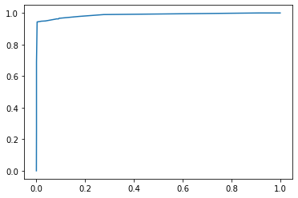
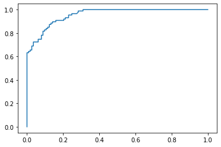

5. 决策树模型
5.1 决策树模型的基本原理
5.1.1 决策树模型简介
决策树是通过对一系列问题进行If/else的推导，最终实现相关决策.png)
商业实战中是根据多个特征来预测离职概率，再根据相应的阈值来判断是否离职，例如，离职概率超过50%即认为员工会离职
几个概念：父节点、子节点、根节点、叶子节点
决策树主要是通过连续的逻辑判断得出最后的结论，其关键在于如何建立起这样一棵“树”，例如，根节点应该选哪一个特征，选择不同特征会收到不同的效果。其次，收入是一个连续变量。选择收入<10000元或选择收入<100000元作为节点其结果也是不同的
5.1.2 决策树模型的建树依据

例如，一个全部都是离职员工的样本中只有一个类别——离职员工，其出现的频率是100%，所以该系统的基尼系数为$1-1^2=0$，表示该系统没有混乱，或者说该系统“纯度很高”。而如果样本中一半是离职员工，另一半是未离职员工，那么两个类别个数为2，每个类别出现的频率都为50%，所以基尼系数为$1-(0.5^2+0.5^2)=0.5$,其混乱程度很高
.png)
例如，一个初始样本中有1000个员工，其中已知有400人离职，600人不离职。划分前该系统的基尼系数为$1-(0.4^2+0.6^2)=0.48$,下面采用两种方式决定根节点：一是根据“满意度<5”进行分类；二是根据“收入<10000元”进行分类
.png)
.png)
可以看到，划分前的基尼系数为0.48，以满意度<5为根节点进行划分后的基尼系数为0.3，而以收入<10000元为根节点进行划分后的基尼系数为0.45.基尼系数越低表示系统的混乱程度越低，区分度越高，越适合用于分类预测，因此这里选择满意度<5作为根节点
根节点下面的节点也是也是用类似方法来选择。例如，对于变量“收入”来说，是选择收入<10000元，还是选择收入<100000元作为划分依据，同样通过计算这两种情况下划分后的基尼系数来进行判断。若还有其他变量，如“工龄”，“月工时”等，也是通过类似方法计算划分后的基尼系数，再根据基尼系数判断如何划分节点，从而搭建出一个较为完善的决策树模型。采用基尼系数进行运算的决策树也称为CART决策树
补充知识点：信息熵
除了基尼系数，还有一种衡量系统伦乱程度的经典手段——信息熵.png)
.png)
.png)
.png)
基尼系数涉及平方运算，而信息熵涉及对数函数运算，因此目前决策树模型默认使用基尼系数作为建树依据，运算速度较快
5.1.3 决策树模型的代码实现
决策树模型既能做分类分析（即预测分类变量值），又能做回归分析（即预测连续变量值），对应的模型分别为分类决策树模型（DecisionTreeClassifier）和回归决策树模型（DecisonTreeRegressor）
1.分类决策树模型（DecisionTreeClassifier）
1 | from sklearn.tree import DecisionTreeClassifier # 引入分类决策树模型DecisionTreeClassifier |
[0]
如果要同时预测多个数据，则可以写成如下形式：
1 | print(model.predict([[5, 5], [7, 7], [9, 9]])) |
[0 0 1]
.png)
决策树可视化,
X[0]表示数据的第一个特征
X[1]表示数据的第二个特征
gini表示该节点的基尼系数，以根节点为列,$1-(0.4^2+0.6^2)=0.48$
sanples表示该节点的样本数
value表示各分类的样本数，例如，根节点中的[2,3]表示分类为0的样本数为2，分类为1的样本数为3
class表示该区块被划分为的类别，它是由value中样本数较多的类别决定的
以数据[5,5]为例，在根节点时，它满足X[1]（即第2个特征数值）小于等于7的条件，所以被划分到左边的子节点。在孩子节点又进行一次判断，判断X[0]是否小于等于2，因为X[0]为5，不满足该条件，所以划分到孩子节点的右边的子节点，而孩子节点的类别class为0，所以[5,5]在该决策树模型中被预测为类别0
决策树可视化不重要，不用看了
2.回归决策树模型（DecisionTreeRegressor）
1 | from sklearn.tree import DecisionTreeRegressor |
[4.5]
.png)
.png)
.png)
.png)
5.2 案例实战：员工离职预测模型搭建
5.2.1 模型搭建
通过已有的员工信息和离职表现来搭建相应的员工离职预测模型，可以预测之后的员工是否会离职
1.数据读取与预处理
首先读取员工信息以及其交易离职表现，即是否离职记录，代码如下：
1 | import pandas as pd |
| 工资 | 满意度 | 考核得分 | 工程数量 | 月工时 | 工龄 | 离职 | |
|---|---|---|---|---|---|---|---|
| 0 | 低 | 3.8 | 0.53 | 2 | 157 | 3 | 1 |
| 1 | 中 | 8.0 | 0.86 | 5 | 262 | 6 | 1 |
| 2 | 中 | 1.1 | 0.88 | 7 | 272 | 4 | 1 |
| 3 | 低 | 7.2 | 0.87 | 5 | 223 | 5 | 1 |
| 4 | 低 | 3.7 | 0.52 | 2 | 159 | 3 | 1 |
数据解读：离职列中，1表示离职，0表示未离职，该表格共有15000组历史数据，前3571组为离职数据，后11429组为非离职员工数据。我们的目的就是根据这些历史数据搭建决策树模型来预测之后员工的离职可能性
处理文本内容，代码如下：
1 | df = df.replace({'工资': {'低': 0, '中': 1, '高': 2}}) |
| 工资 | 满意度 | 考核得分 | 工程数量 | 月工时 | 工龄 | 离职 | |
|---|---|---|---|---|---|---|---|
| 0 | 0 | 3.8 | 0.53 | 2 | 157 | 3 | 1 |
| 1 | 1 | 8.0 | 0.86 | 5 | 262 | 6 | 1 |
| 2 | 1 | 1.1 | 0.88 | 7 | 272 | 4 | 1 |
| 3 | 0 | 7.2 | 0.87 | 5 | 223 | 5 | 1 |
| 4 | 0 | 3.7 | 0.52 | 2 | 159 | 3 | 1 |
将表格中的“离职”列表作为目标变量，剩下的字段作为特征变量，通过一个员工的特征来判断其是否会离职
2.提取特征变量和目标变量
1 | X = df.drop(columns='离职') |
3.划分训练集和测试集
提取完特征变量和目标变量后，还需要将原来的15000组数据划分为训练集和测试集
1 | from sklearn.model_selection import train_test_split # 导入train_test_split()函数 |
4.模型训练及搭建
1 | from sklearn.tree import DecisionTreeClassifier |
DecisionTreeClassifier(max_depth=3, random_state=123)
至此，模型训练完成
5.2.2 模型预测及评估
1.直接预测是否离职
这里把测试集中的数据导入模型中进行预测
1 | y_pred = model.predict(X_test) |
[0 0 1 0 0 0 1 0 0 0 0 0 0 0 0 1 0 1 0 0 0 0 0 0 0 0 0 1 1 0 1 0 1 0 0 1 0
1 0 0 0 0 0 1 0 0 0 0 0 0 0 1 0 0 1 0 0 1 0 0 0 1 0 1 1 0 0 0 0 0 0 0 0 0
0 0 1 0 0 0 0 0 0 0 0 0 1 0 0 1 0 0 0 0 1 1 1 0 0 0]
y_pred是一个numpy.ndarray类型的数组结构，y_test为Series类型的一维序列结构，都把它们转换成列表
1 | # 通过构造DataFrame进行对比 |
| 预测值 | 实际值 | |
|---|---|---|
| 0 | 0 | 0 |
| 1 | 0 | 0 |
| 2 | 1 | 1 |
| 3 | 0 | 0 |
| 4 | 0 | 0 |
1 | # 如果要查看整体的预测准确度，可以采用如下代码： |
0.9573333333333334
1 | # 或者用模型自带的score函数查看预测准确度 |
0.9573333333333334
2.预测不离职&离职概率
其实分类决策树模型本质预测的并不是准确的0或1的分类，而是预测其属于某一分类的概率，可以通过如下代码查看预测属于各个分类的概率：
1 | y_pred_proba = model.predict_proba(X_test) |
[[0.98526077 0.01473923]
[0.98526077 0.01473923]
[0.28600613 0.71399387]
[0.98526077 0.01473923]
[0.92283214 0.07716786]]
1 | b = pd.DataFrame(y_pred_proba, columns=['不离职概率', '离职概率']) |
| 不离职概率 | 离职概率 | |
|---|---|---|
| 0 | 0.985261 | 0.014739 |
| 1 | 0.985261 | 0.014739 |
| 2 | 0.286006 | 0.713994 |
| 3 | 0.985261 | 0.014739 |
| 4 | 0.922832 | 0.077168 |
如果想查看离职概率，即查看y_pred_proba的第二列，可以采用如下代码，这个是二维数组选取列的方法，其中逗号前的“:”表示所有行，逗号后面的数字1则表示第二列，如果把数字1改成数字0，则提取第一列不离职概率。
1 | y_pred_proba[:,1] |
array([0.01473923, 0.01473923, 0.71399387, ..., 0.01473923, 0.94594595,
0.01473923])
3.模型预测效果评估
在Python实现上，通过4.3节讲过的代码就可以求出在不同阈值下的命中率（TPR）以及假警报率（FPR）的值，从而可以绘制ROC曲线。
1 | from sklearn.metrics import roc_curve |
通过4.3节相关代码可以查看不同阈值下的假警报率和命中率，代码如下：
1 | a = pd.DataFrame() # 创建一个空DataFrame |
| 阈值 | 假警报率 | 命中率 | |
|---|---|---|---|
| 0 | 2.000000 | 0.000000 | 0.000000 |
| 1 | 1.000000 | 0.000000 | 0.247110 |
| 2 | 0.945946 | 0.008232 | 0.677746 |
| 3 | 0.713994 | 0.038128 | 0.942197 |
| 4 | 0.077168 | 0.159879 | 0.969653 |
| 5 | 0.059406 | 0.171577 | 0.972543 |
| 6 | 0.045763 | 0.240035 | 0.976879 |
| 7 | 0.014739 | 1.000000 | 1.000000 |
第二行表示只有当某员工被预测为离职的概率≥100%（因为概率不会超过100%，所以其实就是被预测为离职的概率等于100%），才判定其离职，此时命中率为24.7%，即所有的实际离职的员工中被预测为离职的员工占24.7%，在这种极端的阈值条件下，该命中率已经算是很高了。第三行表示只有当某员工被预测为离职的概率≥94.6%，才判定其会离职，此时命中率为67.8%，假警报率为0.82%，以此类推
已知了不同阈值下的假警报率和命中率，可通过matplotlib库可绘制ROC曲线，代码如下：
1 | import matplotlib.pyplot as plt # 当时运行代码时找不到指定文件，升级一下matplotlib包就好了， |
通过如下代码则可以快速求出模型的AUC值：
1 | from sklearn.metrics import roc_auc_score |
0.9736722483245008
4.特征重要性评估
搭建完模型后，有时还要知道各个特征变量的重要程度，即哪些特征变量在模型中发挥的作用更大，这个重要性程度称为特征重要性。在决策树模型中，一个特征变量对模型整体基尼系数下降的贡献越大，它的特征重要性就越大
通过如下代码可以查看决策树模型中各个特征变量的重要性
1 | model.feature_importances_ |
array([0. , 0.59810862, 0.14007392, 0.10638659, 0.00456495,
0.15086592])
1 | # 通过DataFrame进行展示，并根据重要性进行倒序排列 |
| 特征名称 | 特征重要性 | |
|---|---|---|
| 1 | 满意度 | 0.598109 |
| 5 | 工龄 | 0.150866 |
| 2 | 考核得分 | 0.140074 |
| 3 | 工程数量 | 0.106387 |
| 4 | 月工时 | 0.004565 |
| 0 | 工资 | 0.000000 |
可以看到，特征重要性最高的是“满意度”，而“工资”在模型中特征重要性为0，也就是说它没有发挥作用，这并不符合常理，之所以会有这个结果，在某种程度上是因为我们限制了决策树的最大深度为3层，所以“工资”没有发挥作用的机会，如果增大决策树的最大深度，那么它可能会发挥作用，这一点在5.3.2小节会进行验证。另一个重要的原因是本案例中“工资”不是具体的数值，而是“高”“中”“低”三个档次，这种划分过于宽泛，使得特征变量在决策树模型中发挥的作用较小，如果“工资”是具体的数值，如10000元，那么该特征变量应该会发挥更大的作用
5.3 参数调优 - K折交叉验证 & GridSearch网格搜索
机器学习的各个模型其实都有一些内置的参数，如max_depth（树的最大深度），这种参数又称为超参数，除了这个还有一些参数：
分类决策树模型DecisionTreeClassifier（）的常用超参数：
criterion：特征选择标准，取值为’entropy’（信息熵）和’gini’（基尼系数），默认值为’gini’
splitter：取值为’best’和’random’。’best’指在特征的所有划分点中找出最优的划分点，适合样本量不大的情况；random指随机地在部分划分点中寻找局部最优的划分点，适合样本量非常大的情况，默认值为best
max_depth：决策树最大深度，取值为int型或None，默认值为None，一般数据或特征较少的时候可以不设置，如果数据或特征较多，可以设置最大深度进行限制
min_samples_split：子节点往下分裂所需的最小样本数，默认值为2，如果子节点中的样本数小于该值则停止分裂
min_samples_leaf：叶子节点的最小样本数，默认值为1.如果叶子节点中的样本数小于该值，该叶子节点会和兄弟节点一起被剪枝，即剔除该叶子节点和其兄弟节点，并停止分类
min_weight_fraction_leaf：叶子节点最小的样本权重和，默认值为0，即不考虑权重问题，如果小于该值，该叶子节点会和兄弟节点一起被剪枝。如果较多样本有缺失值或者样本的分布类别偏差很大，则需要考虑样本权重的问题
max_features：在划分节点时所考虑的特征值数量的最大值，默认值为None，可以传入int型或float型数据，如果传入的是float型数据，则表示百分比
max_leaf_nodes：最大叶子节点数，默认值为None，可以传入int型数据
class_weight：指定类别权重，默认值为None，可以取balanced，代表样本量少的类别所对应的样本权重更高，也可以传入字典来指定权重，该参数主要是为防止训练集中某些类别的样本过多，导致训练的决策树过于偏向这些类别。处理指定参数，还可以使用过采样和欠采样的方法处理样本类别不平衡的问题，在11章讲解
random_state：当数据量较大或特征变量较多，可能在某个节点划分时，会遇到两个特征变量的信息增益或基尼系数下降值相同的情况，此时决策树模型会默认从中随机选择一个特征变量进行划分，这样可能会导致每次运行程序后生成的决策树不一致。设置random_state参数可以保证每次运行程序后各节点的分裂结果都是一致的，这在特征变量较多、树的深度较深时较为重要
大多数情况下，使用模型的默认参数也能获得较好的结果及预测准确度，然而如果想要获得更准确的结果，就需要对模型的超参数进行调优。例如max_depth取3还是取默认值None（即不限制最大深度，分裂到所有叶子节点的基尼系数都为0）是有讲究的，如果取值过小，可能会导致模型欠拟合，如果取值过大，则会容易过拟合，因此需要一个手段来合理地调节模型参数。
本节介绍调节模型参数的常用方法GridSearch网格搜索，以及常与其搭配使用的K折交叉验证
5.3.1 K折交叉验证
在机器学习中，因为训练集和测试集的数据划分是随机的，所以有时候会重复地使用数据，以便更好地评估模型的有效性，并选出最好的模型，该做法称为交叉验证。具体而言就是对原始样本数据进行切分，然后组合成为多组不同的训练集和测试集，用训练集训练模型，用测试集评估模型。某次的训练集可能是下次的测试集，故而称为交叉验证。
交叉验证的方法有三种：简单交叉验证，K折交叉验证和留一交叉验证。K折交叉验证应用较为广泛，它是指将数据集随机等分为K份，每一次选取K-1份作为训练集，用剩下的的1份作为测试集，得到K个模型后将者K个模型的平均测试效果作为最终的模型效果.png)
通常来说，如果训练集相对较小，则增大K值，这样每次迭代过程中将会有更多的数据用于模型训练，同时算法的时间延迟；如果训练集相对较大，则减小K值，这样可以降低模型在不同的数据块上进行重复拟合性能评估的计算成本，在平均性能的基础上获得模型的准确评估。
除了更精确地评估模型，交叉验证的另一个重要的作用就是利用更精确的评估结果对模型进行参数调优，它经常与GridSeatch网格搜索配合使用
前情提要 - 5.2节的模型搭建代码
1 | # 1.读取数据与简单预处理 |
DecisionTreeClassifier(max_depth=3, random_state=123)
通过以下代码可以实现K折交叉验证，并获得每次验证的得分结果
1 | from sklearn.model_selection import cross_val_score # 引入交叉验证函数 |
array([0.96666667, 0.96066667, 0.959 , 0.96233333, 0.91366667])
1 | acc.mean() |
0.9524666666666667
以ROC曲线的AUC值作为评估标准，则可以设置scoring参数为roc_auc
1 | from sklearn.model_selection import cross_val_score |
array([0.97146884, 0.9674637 , 0.96641351, 0.97047305, 0.95030156])
1 | acc.mean() |
0.9652241309284616
5.3.2 GridSearch网格搜索
GridSearch网格搜索时一种穷举搜索的参数调优手段：遍历所有的候选参数，循环建立模型并评估模型的有效性和准确性，选取表现最好的参数作为最终结果。以决策树最大深度参数max_depth为例，我们可以在[1,3,5,7,9]这些值中遍历，以准确度或ROC曲线的AUC值作为评估标准来搜索最合适的max_depth值，如果要同时调节多个模型参数，例如，模型有2个参数，第一个参数有4种可能，第2个参数有5种可能，所有的可能性可以表示成4x5的网格，那么遍历的过程就像是在网格里搜索
1.单参数的参数调优
1 | from sklearn.model_selection import GridSearchCV # 网格搜索合适的超参数 |
{'max_depth': 7}
1 | # 通过取消如下代码的注释可以查看GridSearchCV函数的官方介绍 |
因为max_depth参数设置了5个候选值，又设置了5折交叉验证，所以对于每个候选值，模型都会运行5遍（公运行5x5=25遍），每个候选值都通过5折交叉验证获得一个平均分，根据平均分进行排序，得到决策树的最大深度设置为7时最优
补充知识点：批量生成调参所需数据
1 | import numpy as np |
参数调优的效果检验
根据max_depth=7来重新搭建模型，并进行检测查看新模型的预测准确度及ROC曲线的AUC值来验证参数调优后是否提高了模型的有效性
1 | # 根据max_depth=7来重新搭建模型 |
0.982
与原模型在测试集上的预测准确度0.957相比，参数调优之后预测准确度有所上升。其实预测准确度也可能下降，因为参数调优时是以ROC曲线的AUC值作为评估标准的，而非预测准确度
查看新模型的ROC曲线和AUC值
1 | # 查看新的AUC值 |

1 | # 计算AUC值，得到0.987，与参数调优前的AUC值0.973相比，模型有效性的确有所提高 |
0.9878194468097895
总结：原来获得的AUC值为0.9736，现在获得的AUC值为0.9877，的确提高了模型的预测水平
补充：决策树深度增加时特征重要性的改变
参数调优后，决策树模型的深度从3增加到7，树的子节点和叶子节点都会有所增加，特征重要性也可能发生变化，通过如下代码可以查看参数调优后新模型中各个特征变量的特征重要性
1 | # 查看此时的变量重要性 |
array([0.00059222, 0.52718305, 0.13201648, 0.1116004 , 0.07731135,
0.1512965 ])
1 | # 一一对应 |
| 特征名称 | 特征重要性 | |
|---|---|---|
| 1 | 满意度 | 0.527183 |
| 5 | 工龄 | 0.151297 |
| 2 | 考核得分 | 0.132016 |
| 3 | 工程数量 | 0.111600 |
| 4 | 月工时 | 0.077311 |
| 0 | 工资 | 0.000592 |
对比原模型的特征变量的特征重要性，可以发现“工资”的特征重要性从0上升到0.000592，这是因为决策树增加了节点使用“工资”作为分裂的依据，也验证了5.2.2小节末尾的猜测：如果增大决策树的最大深度，那么“工资”可能会发挥作用
2.多参数调优
除了可以进行单参数调优，网格搜索还可以进行多参数调优。下面选择DecisionTreeClassifier()函数的3个超参数max_depth（最大深度），criterion（特征选择标准）和min_samples_split（子节点往下分裂所需的最小样本数），使用GridSearchCV（）函数进行多参数调优
1 | from sklearn.model_selection import GridSearchCV |
{'criterion': 'entropy', 'max_depth': 11, 'min_samples_split': 13}
将criterion设置为entropy信息熵，max_depth设置为11，min_samples_split设置为13时，模型最优，将这些参数的最优值引入模型
1 | # 根据多参数调优的结果来重新搭建模型 |
0.9823333333333333
1 | # 查看新的AUC值 |
0.9880075960970136
总结：这里多参数调优后发现，模型效果的确有所优化
注意点1：多参数调优和分别单参数调优的区别
多参数调优和单参数分别调优是有区别的，比如有的读者为了省事，对上面的3个参数进行3次单独的单参数调优，然后将结果汇总，这样的做法其实是不严谨的。因为在进行单参数调优的时候，是默认其他参数取默认值的，那么该参数和其他参数都不取默认值的情况就没有考虑进来，也即忽略了多个参数对模型的组合影响。以上面的代码示例来说，使用多参数调优时，它是526=60种组合可能，而如果是进行3次单参数调优，则只是5+2+6=13种组合可能。
因此，如果只需要调节一个参数，那么可以使用单参数调优，如果需要调节多个参数，则推荐使用多参数调优。
注意点2：参数取值是给定范围的边界
另外一点需要需要注意的是，如果使用GridSearchCV()方法所得到的参数取值是给定范围的边界，那么有可能存在范围以外的取值使得模型效果更好，因此需要我们额外增加范围，继续调参。举例来说，倘若上述代码中获得的最佳max_depth值为设定的最大值13，那么实际真正合适的max_depth可能更大，此时便需要将搜索网格重新调整，如将max_depth的搜索范围变成[9, 11, 13, 15, 17]，再重新参数调优。
补充：决策树的前剪枝和后剪枝
决策树剪枝的目的是防止构建的决策树出现过拟合。决策树剪枝分为前剪枝和后剪枝
前剪枝：从上往下剪枝，通常利用超参数进行剪枝。例如，通过限制树的最大深度便能减去该最大深度下面的节点
后剪枝：从下往上剪枝，大多是根据业务需求剪枝，例如，在违约预测模型中，认为违约概率为45%和50%的两个叶子节点都是高危人群，那么就把这两个叶子节点合并成一个节点
在商业实战中，前剪枝应用的更广泛，参数调优其实也起到了一定的前剪枝作用
.png)
6 朴素贝叶斯模型
6.1 朴素贝叶斯模型的算法原理
.png)
6.1.1 一维特征变量下的贝叶斯模型
.png)
.png)
.png)
.png)
6.1.2 二维特征向量下单贝叶斯模型
.png)
.png)
.png)
（1）独立性假设
在计算该概率之前，我们首先引入朴素贝叶斯模型的独立性假设：朴素贝叶斯模型中各特征之间相互独立，即，因此上式可以写作.png)
.png)
.png)
6.1.3 n维特征变量下的贝叶斯模型
.png)
.png)
6.1.4 朴素贝叶斯模型简单代码演示
通过如下代码引入朴素贝叶斯模型（这里用的是高斯贝叶斯分类器）
1 | from sklearn.naive_bayes import GaussianNB |
[0]
1 | GaussianNB? |
6.2 案例实战：肿瘤预测模型
6.2.1 案例背景
6.2.2 数据读取与划分
1.数据读取
首先通过如下代码导入某医院乳腺肿瘤患者的6个特征维度及肿瘤性质的数据。共569个患者，其中良性肿瘤358例，恶性肿瘤211例
1 | import pandas as pd |
| 最大周长 | 最大凹陷度 | 平均凹陷度 | 最大面积 | 最大半径 | 平均灰度值 | 肿瘤性质 | |
|---|---|---|---|---|---|---|---|
| 0 | 184.60 | 0.2654 | 0.14710 | 2019.0 | 25.38 | 17.33 | 0 |
| 1 | 158.80 | 0.1860 | 0.07017 | 1956.0 | 24.99 | 23.41 | 0 |
| 2 | 152.50 | 0.2430 | 0.12790 | 1709.0 | 23.57 | 25.53 | 1 |
| 3 | 98.87 | 0.2575 | 0.10520 | 567.7 | 14.91 | 26.50 | 0 |
| 4 | 152.20 | 0.1625 | 0.10430 | 1575.0 | 22.54 | 16.67 | 0 |
0代表肿瘤为恶性，1代表肿瘤为良性
2.划分特征变量和目标变量
1 | X = df.drop(columns='肿瘤性质') |
6.2.3 模型的搭建与使用
1.划分训练集和测试集
1 | from sklearn.model_selection import train_test_split |
2.模型搭建
1 | from sklearn.naive_bayes import GaussianNB # 高斯朴素贝叶斯适用于任何连续数值型的数据集 |
GaussianNB()
3.模型预测与评估
1 | y_pred = nb_clf.predict(X_test) |
array([1, 0, 1, 0, 1, 0, 0, 0, 1, 1, 1, 0, 0, 1, 1, 1, 1, 1, 1, 0, 1, 1,
0, 1, 0, 1, 1, 0, 0, 0, 0, 1, 0, 0, 1, 1, 0, 1, 1, 1, 1, 1, 1, 1,
1, 0, 1, 1, 1, 0, 0, 0, 1, 1, 1, 1, 1, 0, 1, 1, 1, 0, 1, 1, 1, 1,
1, 0, 1, 1, 1, 1, 1, 0, 1, 0, 1, 1, 1, 0, 1, 0, 1, 0, 1, 1, 0, 1,
0, 1, 1, 0, 1, 1, 0, 1, 1, 1, 1, 1], dtype=int64)
1 | a =pd.DataFrame() # 创建一个空DataFrame |
| 预测试 | 实际值 | |
|---|---|---|
| 0 | 1 | 1 |
| 1 | 0 | 0 |
| 2 | 1 | 1 |
| 3 | 0 | 0 |
| 4 | 1 | 0 |
可以看到前5项的预测准确率为80%，通过如下代码可以查看所有测试集数据的预测精准度
1 | from sklearn.metrics import accuracy_score |
0.9473684210526315
朴素贝叶斯模型属于分类模型，所以也可以利用ROC曲线来评估其预测效果
朴素贝叶斯模型是一种非常典型的机器学习模型，它主要基于贝叶斯公式，在应用过程中会把数据集中的特征看成是相互独立的，而不需要考虑特征时间的关联关系，因此运算速度比较快。相比于其他经典的机器学习模型，朴素贝叶斯模型的泛化能力较弱，不过当样本及特征的数量增加时，其预测效果也是很不错的
7 K近邻算法
7.1 K近邻算法的原理和代码实现
又称为KNN算法
7.1.1 K近邻算法的基本原理
.png)
.png)
.png)
7.1.2 K近邻算法的计算步骤
1.样本数据
1 | import pandas as pd |
| 原始样本 | 酒精含量(%) | 苹果酸含量(%) | 分类 | |
|---|---|---|---|---|
| 0 | 样本1 | 5 | 2 | 0 |
| 1 | 样本2 | 6 | 1 | 0 |
| 2 | 样本3 | 4 | 1 | 0 |
| 3 | 样本4 | 8 | 3 | 1 |
| 4 | 样本5 | 10 | 2 | 1 |
分类0表示葡萄酒A，分类1为葡萄酒B
.png)
2.计算距离
.png)
.png)
3.根据K值判定类别
.png)
补充：数据标准化
本小节使用的演示数据，不同特征变量的量纲级别相差不大，如果把“酒精含量”数据都放大为原来的10倍，“苹果酸含量”数据保持不变，那么两者的量纲级别就相差较大了，此时如果使用K近邻算法来搭建模型，那么“酒精含量”在模型中的重要性将远远超过“苹果酸含量”的重要性，这样会丧失“苹果酸含量”这一特征变量的作用，而且误差也会很大
所以，如果不同特征变量的量纲级别相差较大且在建模时相互影响，我们通常会对数据进行预处理，该手段称为数据标准化或数据归一化。数据标准化的常见方法有min-max标准化（也称离差标准化）和Z-score标准化（也称均值归一化），将在11.3节详细讲解
7.1.3 K近邻算法的代码实现
1 | import pandas as pd |
1 | # 模型训练 |
KNeighborsClassifier(n_neighbors=3)
1 | # 模型预测：预测单个样本 |
[0]
1 | # 模型预测：预测多个样本 |
[0 1]
补充知识点：K近邻算法回归模型
上述代码是用K近邻算法中的K近邻算法分类模型（KNeighborsClassifier）进行分类分析，K近邻算法还可以做回归分析，对应的模型为K近邻算法回归模型（KNeighborsRegressor）。K近邻算法分类模型将离待预测样本点最近的K个训练样本点中出现次数最多的分类作为待预测样本点的分类，K近邻算法回归模型则将离待预测样本点最近的K个训练样本点的平均值作为待预测样本点的分类
1 | from sklearn.neighbors import KNeighborsRegressor |
[2.5]
1 | KNeighborsRegressor? |
7.2 案例实战 - 手写数字识别模型
7.2.1 案例背景
7.2.2 手写数字识别的原理
1.图像二值化
.png)
2.二维数组转换为一维数组
.png)
3.距离计算
手写数字图片处理后形成的1x1024的二维数组可以看成一个行向量，两张图片对应的行向量间的欧式距离可以反映两张图片的相似度。因此，我们可以利用K近邻算法模型计算新样本与原始训练集中各个样本的欧式距离，取新样本的K个近邻点，并以大多数近邻点所在的分类作为新样本的分类
例如，有一个样本手写数字4，其对应的1x1024行向量为：0000…010…111…0011…000
将另一个手写数字x转换成如下1x1024的行向量，假设其中只有中间一个数字不同：0000…110…111…0011…000,
那么手写数字x与样本手写数字4的距离为$|AB|=[(0-0)^2+(0-0)^2+…(0-1)^2+(1-1)^2+(0-0)^2+…+(0-0)^2]^(0.5)=1$
7.2.3 手写数字识别的代码实现
1.数据读取
1 | # 1.读取数据 |
| 对应数字 | 0 | 1 | 2 | 3 | 4 | 5 | 6 | 7 | 8 | ... | 1014 | 1015 | 1016 | 1017 | 1018 | 1019 | 1020 | 1021 | 1022 | 1023 | |
|---|---|---|---|---|---|---|---|---|---|---|---|---|---|---|---|---|---|---|---|---|---|
| 0 | 0 | 0 | 0 | 0 | 0 | 0 | 0 | 0 | 0 | 0 | ... | 0 | 0 | 0 | 0 | 0 | 0 | 0 | 0 | 0 | 0 |
| 1 | 0 | 0 | 0 | 0 | 0 | 0 | 0 | 0 | 0 | 0 | ... | 0 | 0 | 0 | 0 | 0 | 0 | 0 | 0 | 0 | 0 |
| 2 | 0 | 0 | 0 | 0 | 0 | 0 | 0 | 0 | 0 | 0 | ... | 0 | 0 | 0 | 0 | 0 | 0 | 0 | 0 | 0 | 0 |
| 3 | 0 | 0 | 0 | 0 | 0 | 0 | 0 | 0 | 0 | 0 | ... | 0 | 0 | 0 | 0 | 0 | 0 | 0 | 0 | 0 | 0 |
| 4 | 0 | 0 | 0 | 0 | 0 | 0 | 0 | 0 | 0 | 0 | ... | 0 | 0 | 0 | 0 | 0 | 0 | 0 | 0 | 0 | 0 |
5 rows × 1025 columns
2.提取特征变量和目标变量
1 | # 2.提取特征变量和目标变 |
3.划分训练集和测试集
1 | # 3.划分训练集和测试集 |
4.模型搭建
1 | # 4.模型搭建 |
KNeighborsClassifier()
5.模型预测与评估
1 | # 5.模型预测 - 预测数据结果 |
[5 3 7 8 9 2 1 4 5 8 9 5 9 3 3 2 3 7 9 1 0 0 7 6 6 7 0 9 6 9 1 8 6 9 2 5 2
4 5 8 3 6 9 4 9 2 7 3 4 9 5 6 7 3 3 8 3 1 5 3 6 7 5 0 3 7 1 4 9 1 5 1 2 6
9 1 9 5 5 9 2 8 8 4 4 9 4 3 9 8 0 3 4 3 6 8 5 2 9 0]
1 | a = pd.DataFrame() # 创建一个空DataFrame |
| 预测值 | 实际值 | |
|---|---|---|
| 0 | 5 | 5 |
| 1 | 3 | 3 |
| 2 | 7 | 7 |
| 3 | 8 | 8 |
| 4 | 9 | 9 |
1 | # 预测准确度评估 |
0.979328165374677
1 | # 模型自带的score()函数也可以进行打分 |
0.979328165374677
7.3 图像识别原理详解
1.图像大小调整及显示
1 | from PIL import Image |
2.图片灰度处理
1 | img = img.convert('L') |
3.图片二值化处理
1 | # 二值化处理 |
[0 0 0 0 0 0 0 0 0 0 0 0 0 0 0 0 0 0 0 0 0 0 0 0 0 0 0 0 0 0 0 0]
[0 0 0 0 0 0 0 0 0 0 0 0 0 0 0 0 0 0 0 0 0 0 0 0 0 0 0 0 0 0 0 0]
[0 0 0 0 0 0 0 0 0 0 0 0 0 0 0 0 0 0 0 0 0 0 0 0 0 0 0 0 0 0 0 0]
[0 0 0 0 0 0 0 0 0 0 0 0 0 0 0 0 0 0 0 0 0 0 0 0 0 0 0 0 0 0 0 0]
[0 0 0 0 0 0 0 0 0 0 0 0 0 0 0 0 0 0 0 0 0 0 0 0 0 0 0 0 0 0 0 0]
[0 0 0 0 0 0 0 0 0 0 0 0 0 0 0 1 1 1 1 1 0 0 0 0 0 0 0 0 0 0 0 0]
[0 0 0 0 0 0 0 0 0 0 0 0 0 0 0 1 1 1 1 1 1 0 0 0 0 0 0 0 0 0 0 0]
[0 0 0 0 0 0 0 0 0 0 0 0 0 0 1 1 1 1 1 1 1 0 0 0 0 0 0 0 0 0 0 0]
[0 0 0 0 0 0 0 0 0 0 0 0 0 1 1 1 1 1 1 1 1 1 0 0 0 0 0 0 0 0 0 0]
[0 0 0 0 0 0 0 0 0 0 0 0 0 1 1 1 1 1 1 1 1 1 0 0 0 0 0 0 0 0 0 0]
[0 0 0 0 0 0 0 0 0 0 0 0 1 1 1 1 0 1 1 1 1 1 0 0 0 0 0 0 0 0 0 0]
[0 0 0 0 0 0 0 0 0 0 0 0 1 1 1 1 0 1 1 1 1 1 0 0 0 0 0 0 0 0 0 0]
[0 0 0 0 0 0 0 0 0 0 0 1 1 1 1 0 0 1 1 1 1 1 0 0 0 0 0 0 0 0 0 0]
[0 0 0 0 0 0 0 0 0 0 0 1 1 1 1 0 0 1 1 1 1 1 0 0 0 0 0 0 0 0 0 0]
[0 0 0 0 0 0 0 0 0 0 1 1 1 1 0 0 0 1 1 1 1 1 0 0 0 0 0 0 0 0 0 0]
[0 0 0 0 0 0 0 0 0 0 1 1 1 1 0 0 0 1 1 1 1 1 0 0 0 0 0 0 0 0 0 0]
[0 0 0 0 0 0 0 0 0 1 1 1 1 0 0 0 0 1 1 1 1 1 0 0 0 0 0 0 0 0 0 0]
[0 0 0 0 0 0 0 0 0 1 1 1 1 0 0 0 0 1 1 1 1 1 0 0 0 0 0 0 0 0 0 0]
[0 0 0 0 0 0 0 0 1 1 1 1 0 0 0 0 0 1 1 1 1 1 0 0 0 0 0 0 0 0 0 0]
[0 0 0 0 0 0 0 1 1 1 1 1 0 0 0 0 0 1 1 1 1 1 0 0 0 0 0 0 0 0 0 0]
[0 0 0 0 0 0 0 1 1 1 1 1 1 1 1 1 1 1 1 1 1 1 1 1 0 0 0 0 0 0 0 0]
[0 0 0 0 0 0 1 1 1 1 1 1 1 1 1 1 1 1 1 1 1 1 1 1 1 0 0 0 0 0 0 0]
[0 0 0 0 0 0 1 1 1 1 1 1 1 1 1 1 1 1 1 1 1 1 1 1 1 0 0 0 0 0 0 0]
[0 0 0 0 0 0 0 1 1 1 1 1 1 1 1 1 1 1 1 1 1 1 1 1 0 0 0 0 0 0 0 0]
[0 0 0 0 0 0 0 0 0 0 0 0 0 0 0 0 0 1 1 1 1 1 0 0 0 0 0 0 0 0 0 0]
[0 0 0 0 0 0 0 0 0 0 0 0 0 0 0 0 0 1 1 1 1 1 0 0 0 0 0 0 0 0 0 0]
[0 0 0 0 0 0 0 0 0 0 0 0 0 0 0 0 0 1 1 1 1 1 0 0 0 0 0 0 0 0 0 0]
[0 0 0 0 0 0 0 0 0 0 0 0 0 0 0 0 0 1 1 1 1 1 0 0 0 0 0 0 0 0 0 0]
[0 0 0 0 0 0 0 0 0 0 0 0 0 0 0 0 0 1 1 1 1 0 0 0 0 0 0 0 0 0 0 0]
[0 0 0 0 0 0 0 0 0 0 0 0 0 0 0 0 0 0 0 1 0 0 0 0 0 0 0 0 0 0 0 0]
[0 0 0 0 0 0 0 0 0 0 0 0 0 0 0 0 0 0 0 0 0 0 0 0 0 0 0 0 0 0 0 0]
[0 0 0 0 0 0 0 0 0 0 0 0 0 0 0 0 0 0 0 0 0 0 0 0 0 0 0 0 0 0 0 0]
4.将二维数组转换成一维数组
1 | arr_new = arr.reshape(1, -1) # 将二维数组转换成一行 |
array([[0, 0, 0, ..., 0, 0, 0]], dtype=uint8)
1 | print(arr_new.shape) |
(1, 1024)
此时我们可以把这个处理过的图片“数字4”传入到我们上面训练好的knn模型中
1 | answer = knn.predict(arr_new) |
图片中的数字为：4
用粗一点的笔手写一个数字，然后拍照，传到如下代码的23行位置，亲自试试模型的识别效果
1 | # 主要分为三步，第一步训练模型，第二步处理图片，第三步导入模型并预测 |
图片中的数字为：1
8 随机森林模型——集成学习模型
8.1 随机森林模型的原理和代码实现
8.1.1 集成模型简介
集成学习模型使用一系列弱学习器（也称为基础模型或基模型）进行学习，并将各个弱学习器的结果进行整合，从而获得比单个学习器更好的学习效果。集成学习模型的常见算法有Bagging算法和Boosting算法。Bagging算法的典型机器学习模型为随机森立，而Boosting算法的典型机器学习模型为AdaBoost，GBDT，XGBoost和LightGBM模型
1.Bagging算法
Bagging算法的原理类似投票，每个弱学习都有一票，最终根据所有弱学习器的投票，按照“少数服从多数”的原则产生最终的预测结果.png)
.png)
2.Boosting算法
Boosting算法的本质是将弱学习提升为强学习器，Bagging算法对待所有弱学习器一视同仁；而Boosting算法则会对弱学习器区别对待，通俗来将就是“培养精英”和“重视错误”
“培养精英”就是每一轮训练后对预测结果较准确的弱学习器给予较大的权重，对表现不好的则降低权重，这样在最终预测时，“优秀模型”的权重是最大的，相当于它可以投出多票，而“一般模型”只能投出一票或者不能投票
“重视错误”就是在每一轮训练后改变训练集的权重或概率分布，通常提高在前一轮被弱学习器预测错误的样例的权重，降低前一轮被弱学习器预测正确的样例的权重，来提高弱学习器对预测错误的数据的重视程度，，从而提高模型的整体预测效果
.png)
8.1.2 随机森林模型的基本原理
随机森林（Random Forest）是一种经典的Bagging模型，其弱学习器为决策树模型，如下图所示，随机森林模型会在原始数据集中随机抽样，构成n 个不同的样本数据集，然后根据这些数据集搭建n个不同的决策树模型，最后根据这些决策树模型的平均值（针对回归模型）或者投票情况（针对分类模型）来获取最终结果
.png)
为了保证模型的泛化能力（通用能力），随机森林模型在建立每棵树时，往往会遵循“数据随机”和“特征随机”这两个基本原则
1.数据随机
从所有数据中有放回地随机抽取数据作为其中一个决策树模型的训练模型。例如，有1000个原始数据，有放回地抽取1000次，构成一组新的数据，用于训练某一个决策树模型
2.特征随机
如果每个样本的特征维度为M，指定一个常数$k<M$,随机从M个特征中选取k个特征，默认k=根号M
与单独的决策树模型相比，随机森林模型由于集成了多个决策树，其预测结果会更准确，且不容易造成过拟合现象，泛化能力较强
8.1.3 随机森林模型的代码实现
和决策树模型一样，随机森林模型既可以做分类分析，也可以做回归分析。
分别对应的模型为随机森林分类模型（RandomForestClassifier）及随机森林回归模型（RandomForestRegressor）。随机森林分类模型的基模型是分类决策树模型（详见5.1.2节），随机森林回归模型的基模型则是回归决策树模型（详见5.1.3节）。
1 | # 随机森林分类模型简单代码演示如下所示： |
[0]
1 | # 随机森林回归模型简单代码演示如下所示： |
[2.8]
8.2 案例实战：股票涨跌预测模型
8.2.1 股票基本数据获取(最好直接看tushare官方数据接口文档)
注意：截至目前，老接口已经不能用了
1.获取日线行情数据
1 | import tushare as ts |
| ts_code | trade_date | open | high | low | close | pre_close | change | pct_chg | vol | amount | |
|---|---|---|---|---|---|---|---|---|---|---|---|
| 0 | 000002.SZ | 20190131 | 27.39 | 28.15 | 27.00 | 27.75 | 27.21 | 0.54 | 1.9846 | 411857.60 | 1138512.393 |
| 1 | 000002.SZ | 20190130 | 26.70 | 27.82 | 26.63 | 27.21 | 26.88 | 0.33 | 1.2277 | 592303.18 | 1615186.856 |
| 2 | 000002.SZ | 20190129 | 25.91 | 26.88 | 25.87 | 26.88 | 26.06 | 0.82 | 3.1466 | 368071.63 | 974279.357 |
| 3 | 000002.SZ | 20190128 | 26.20 | 26.62 | 25.86 | 26.06 | 26.10 | -0.04 | -0.1533 | 308906.56 | 810288.818 |
| 4 | 000002.SZ | 20190125 | 25.51 | 26.35 | 25.49 | 26.10 | 25.41 | 0.69 | 2.7155 | 451756.17 | 1176479.676 |
2.获取分钟级别的数据
1 | df = ts.pro_bar(ts_code='600000.SH', |
| ts_code | trade_time | open | close | high | low | vol | amount | trade_date | pre_close | |
|---|---|---|---|---|---|---|---|---|---|---|
| 0 | 600000.SH | 2020-01-08 15:00:00 | 12.32 | 12.32 | 12.32 | 12.32 | 1485837.0 | 18305512.0 | 20200108 | 12.32 |
| 1 | 600000.SH | 2020-01-08 14:59:00 | 12.32 | 12.32 | 12.32 | 12.32 | 0.0 | 0.0 | 20200108 | 12.32 |
| 2 | 600000.SH | 2020-01-08 14:58:00 | 12.32 | 12.32 | 12.32 | 12.32 | 22000.0 | 271040.0 | 20200108 | 12.32 |
| 3 | 600000.SH | 2020-01-08 14:57:00 | 12.32 | 12.32 | 12.33 | 12.32 | 266196.0 | 3280959.0 | 20200108 | 12.32 |
| 4 | 600000.SH | 2020-01-08 14:56:00 | 12.32 | 12.32 | 12.33 | 12.32 | 265829.0 | 3275157.0 | 20200108 | 12.32 |
3.获取指数信息
查看指数基本信息，指数日线行情需要积分
1 | df = pro.index_basic(market='SSE') # 上交所 |
| ts_code | name | market | publisher | category | base_date | base_point | list_date | |
|---|---|---|---|---|---|---|---|---|
| 0 | 000001.SH | 上证指数 | SSE | 中证公司 | 综合指数 | 19901219 | 100.00 | 19910715 |
| 1 | 000002.SH | 上证A指 | SSE | 中证公司 | 综合指数 | 19901219 | 100.00 | 19920221 |
| 2 | 000003.SH | 上证B指 | SSE | 中证公司 | 综合指数 | 19920221 | 100.00 | 19920221 |
| 3 | 000004.SH | 上证工业类指数 | SSE | 中证公司 | 综合指数 | 19930430 | 1358.78 | 19930503 |
| 4 | 000005.SH | 上证商业类指数 | SSE | 中证公司 | 综合指数 | 19930430 | 1358.78 | 19930503 |
通用行情接口
这个比较杂，需要不断熟悉不断学习
ts_code（str /必选）：证券代码，不支持多值输入，多值输入获取结果会有重复记录
api（str /不必选）：pro版api对象，如果初始化了set_token，此参数可以不需要
start_date（str/不必选）：开始日期 (日线格式：YYYYMMDD，提取分钟数据请用2019-09-01 09:00:00这种格式)
end_date（str/不必选）：结束日期 (日线格式：YYYYMMDD)
asset（str/必选）：资产类别：E股票 I沪深指数 C数字货币 FT期货 FD基金 O期权 CB可转债（v1.2.39），默认E
adj（str/不必选）：复权类型(只针对股票)：None未复权 qfq前复权 hfq后复权 , 默认None，目前只支持日线复权，同时复权机制是根据设定的end_date参数动态复权，采用分红再投模式
freq（str/必选）：数据频度 ：支持分钟(min)/日(D)/周(W)/月(M)K线，其中1min表示1分钟（类推1/5/15/30/60分钟） ，默认D。对于分钟数据有600积分用户可以试用（请求2次）
ma（list/不必选）：均线，支持任意合理int数值。注：均线是动态计算，要设置一定时间范围才能获得相应的均线，比如5日均线，开始和结束日期参数跨度必须要超过5日。目前只支持单一个股票提取均线，即需要输入ts_code参数。e.g: ma_5表示5日均价，ma_v_5表示5日均量
factors（list/不必选）：股票因子（asset=’E’有效）支持 tor换手率 vr量比
adjfactor（str/不必选）：复权因子，在复权数据时，如果此参数为True，返回的数据中则带复权因子，默认为False。 该功能从1.2.33版本开始生效
1 | #取上证指数行情数据,权限不够，积分不够 |
抱歉，您没有访问该接口的权限，权限的具体详情访问：https://tushare.pro/document/1?doc_id=108。
抱歉，您没有访问该接口的权限，权限的具体详情访问：https://tushare.pro/document/1?doc_id=108。
抱歉，您没有访问该接口的权限，权限的具体详情访问：https://tushare.pro/document/1?doc_id=108。
---------------------------------------------------------------------------
OSError Traceback (most recent call last)
<ipython-input-30-20166becde73> in <module>
1 #取上证指数行情数据
2
----> 3 df = ts.pro_bar(ts_code='000001.SH', asset='I', start_date='20180101', end_date='20181011')
4 df,head()
E:\anaconda 111\lib\site-packages\tushare\pro\data_pro.py in pro_bar(ts_code, api, start_date, end_date, freq, asset, exchange, adj, ma, factors, adjfactor, offset, limit, contract_type, retry_count)
194 else:
195 return data
--> 196 raise IOError('ERROR.')
197
198
OSError: ERROR.
1 | #均线 |
| ts_code | trade_date | open | high | low | close | pre_close | change | pct_chg | vol | amount | ma5 | ma_v_5 | ma20 | ma_v_20 | ma50 | ma_v_50 | |
|---|---|---|---|---|---|---|---|---|---|---|---|---|---|---|---|---|---|
| 0 | 000001.SZ | 20181011 | 10.05 | 10.16 | 9.70 | 9.86 | 10.45 | -0.59 | -5.6459 | 1995143.83 | 1994186.611 | 10.474 | 1570205.872 | 10.2365 | 1.068715e+06 | 9.7594 | 984673.7130 |
| 1 | 000001.SZ | 20181010 | 10.54 | 10.66 | 10.38 | 10.45 | 10.56 | -0.11 | -1.0417 | 995200.08 | 1045666.180 | 10.650 | 1347249.772 | 10.2460 | 1.027931e+06 | 9.7498 | 957053.2926 |
| 2 | 000001.SZ | 20181009 | 10.46 | 10.70 | 10.39 | 10.56 | 10.45 | 0.11 | 1.0526 | 1064084.26 | 1117946.550 | 10.702 | 1446312.442 | 10.2450 | 1.042988e+06 | 9.7288 | 965667.1742 |
| 3 | 000001.SZ | 20181008 | 10.70 | 10.79 | 10.45 | 10.45 | 11.05 | -0.60 | -5.4299 | 1686358.52 | 1793455.283 | 10.700 | 1428898.530 | 10.2265 | 1.025368e+06 | 9.7060 | 980019.2542 |
| 4 | 000001.SZ | 20180928 | 10.78 | 11.27 | 10.78 | 11.05 | 10.74 | 0.31 | 2.8864 | 2110242.67 | 2331358.288 | 10.744 | 1416530.508 | 10.2105 | 1.006594e+06 | 9.6792 | 981377.6318 |
1 | #换手率tor，量比vr |
抱歉，您没有访问该接口的权限，权限的具体详情访问：https://tushare.pro/document/1?doc_id=108。
抱歉，您没有访问该接口的权限，权限的具体详情访问：https://tushare.pro/document/1?doc_id=108。
抱歉，您没有访问该接口的权限，权限的具体详情访问：https://tushare.pro/document/1?doc_id=108。
---------------------------------------------------------------------------
OSError Traceback (most recent call last)
<ipython-input-32-df812ea09fe6> in <module>
1 #换手率tor，量比vr
2
----> 3 df = ts.pro_bar(ts_code='000001.SZ', start_date='20180101', end_date='20181011', factors=['tor', 'vr'])
4 df.head()
E:\anaconda 111\lib\site-packages\tushare\pro\data_pro.py in pro_bar(ts_code, api, start_date, end_date, freq, asset, exchange, adj, ma, factors, adjfactor, offset, limit, contract_type, retry_count)
194 else:
195 return data
--> 196 raise IOError('ERROR.')
197
198
OSError: ERROR.
8.2.2 股票衍生变量生成
学习如何利用股票的基本数据获取一些衍生变量数据，如股票技术分析中常用的均线指标5日均线价格MA5与10日均线价格MA10、对抗强弱指标RSI、动量指标MOM、指数移动平均值EMA，异同移动平均线MACD等——这些在pro中属于技术面因子，需要积分，在聚宽环境中很全很全，建议在聚宽中编写策略
1.获取股票基本数据
1 | df = pro.daily(ts_code='000002.SZ', start_date='20150101', end_date='20191231') |
| ts_code | trade_date | open | high | low | close | pre_close | change | pct_chg | vol | amount | |
|---|---|---|---|---|---|---|---|---|---|---|---|
| 0 | 000002.SZ | 20191231 | 31.35 | 32.45 | 31.32 | 32.18 | 31.57 | 0.61 | 1.9322 | 663497.98 | 2122966.722 |
| 1 | 000002.SZ | 20191230 | 31.35 | 31.79 | 31.02 | 31.57 | 31.00 | 0.57 | 1.8387 | 915751.42 | 2870247.850 |
| 2 | 000002.SZ | 20191227 | 31.23 | 31.32 | 30.81 | 31.00 | 31.12 | -0.12 | -0.3856 | 703096.48 | 2185106.849 |
| 3 | 000002.SZ | 20191226 | 30.50 | 31.30 | 30.50 | 31.12 | 30.29 | 0.83 | 2.7402 | 888790.74 | 2758745.302 |
| 4 | 000002.SZ | 20191225 | 30.40 | 30.63 | 30.18 | 30.29 | 30.38 | -0.09 | -0.2962 | 685037.32 | 2082008.206 |
1 | # 用set_index()函数将data列设置为行索引 |
| ts_code | open | high | low | close | pre_close | change | pct_chg | vol | amount | |
|---|---|---|---|---|---|---|---|---|---|---|
| trade_date | ||||||||||
| 20191231 | 000002.SZ | 31.35 | 32.45 | 31.32 | 32.18 | 31.57 | 0.61 | 1.9322 | 663497.98 | 2122966.722 |
| 20191230 | 000002.SZ | 31.35 | 31.79 | 31.02 | 31.57 | 31.00 | 0.57 | 1.8387 | 915751.42 | 2870247.850 |
| 20191227 | 000002.SZ | 31.23 | 31.32 | 30.81 | 31.00 | 31.12 | -0.12 | -0.3856 | 703096.48 | 2185106.849 |
| 20191226 | 000002.SZ | 30.50 | 31.30 | 30.50 | 31.12 | 30.29 | 0.83 | 2.7402 | 888790.74 | 2758745.302 |
| 20191225 | 000002.SZ | 30.40 | 30.63 | 30.18 | 30.29 | 30.38 | -0.09 | -0.2962 | 685037.32 | 2082008.206 |
2.生成简单衍生变量（pro接口已经给出这些数据了）
1 | df['close-open'] = (df['close'] - df['open'])/df['open'] |
| ts_code | open | high | low | close | pre_close | change | pct_chg | vol | amount | close-open | high-low | |
|---|---|---|---|---|---|---|---|---|---|---|---|---|
| trade_date | ||||||||||||
| 20191231 | 000002.SZ | 31.35 | 32.45 | 31.32 | 32.18 | 31.57 | 0.61 | 1.9322 | 663497.98 | 2122966.722 | 0.026475 | 0.036079 |
| 20191230 | 000002.SZ | 31.35 | 31.79 | 31.02 | 31.57 | 31.00 | 0.57 | 1.8387 | 915751.42 | 2870247.850 | 0.007018 | 0.024823 |
| 20191227 | 000002.SZ | 31.23 | 31.32 | 30.81 | 31.00 | 31.12 | -0.12 | -0.3856 | 703096.48 | 2185106.849 | -0.007365 | 0.016553 |
| 20191226 | 000002.SZ | 30.50 | 31.30 | 30.50 | 31.12 | 30.29 | 0.83 | 2.7402 | 888790.74 | 2758745.302 | 0.020328 | 0.026230 |
| 20191225 | 000002.SZ | 30.40 | 30.63 | 30.18 | 30.29 | 30.38 | -0.09 | -0.2962 | 685037.32 | 2082008.206 | -0.003618 | 0.014911 |
3.生成移动平均线MA值
1 | df['MA5'] = df['close'].sort_index().rolling(5).mean() |
| ts_code | open | high | low | close | pre_close | change | pct_chg | vol | amount | close-open | high-low | MA5 | MA10 | |
|---|---|---|---|---|---|---|---|---|---|---|---|---|---|---|
| trade_date | ||||||||||||||
| 20191218 | 000002.SZ | 30.50 | 30.96 | 30.20 | 30.31 | 30.45 | -0.14 | -0.4598 | 907932.96 | 2770950.971 | -0.006230 | 0.025166 | 29.272 | 28.609 |
| 20191217 | 000002.SZ | 29.35 | 31.34 | 29.19 | 30.45 | 29.45 | 1.00 | 3.3956 | 1596500.08 | 4825522.418 | 0.037479 | 0.073655 | 28.810 | 28.356 |
| 20191216 | 000002.SZ | 28.25 | 29.45 | 28.15 | 29.45 | 28.15 | 1.30 | 4.6181 | 1896062.95 | 5422583.746 | 0.042478 | 0.046181 | 28.300 | 28.111 |
| 20191213 | 000002.SZ | 28.18 | 28.34 | 28.13 | 28.15 | 28.00 | 0.15 | 0.5357 | 1431370.48 | 4039464.921 | -0.001065 | 0.007465 | 28.044 | 27.971 |
| 20191212 | 000002.SZ | 28.02 | 28.17 | 27.94 | 28.00 | 28.00 | 0.00 | 0.0000 | 563827.86 | 1580712.929 | -0.000714 | 0.008232 | 27.986 | 27.926 |
| 20191211 | 000002.SZ | 27.99 | 28.24 | 27.95 | 28.00 | 27.90 | 0.10 | 0.3584 | 985187.14 | 2765688.862 | 0.000357 | 0.010376 | 27.946 | 27.906 |
| 20191210 | 000002.SZ | 28.08 | 28.15 | 27.73 | 27.90 | 28.17 | -0.27 | -0.9585 | 685469.29 | 1914187.737 | -0.006410 | 0.015146 | 27.902 | 27.906 |
| 20191209 | 000002.SZ | 27.96 | 28.35 | 27.96 | 28.17 | 27.86 | 0.31 | 1.1127 | 1160606.12 | 3267608.704 | 0.007511 | 0.013948 | 27.922 | 27.951 |
| 20191206 | 000002.SZ | 27.86 | 27.88 | 27.72 | 27.86 | 27.80 | 0.06 | 0.2158 | 358417.78 | 997431.113 | 0.000000 | 0.005772 | 27.898 | 27.999 |
| 20191205 | 000002.SZ | 27.95 | 27.95 | 27.61 | 27.80 | 27.78 | 0.02 | 0.0720 | 373263.56 | 1036876.654 | -0.005367 | 0.012314 | 27.866 | 27.914 |
| 20191204 | 000002.SZ | 27.88 | 28.00 | 27.65 | 27.78 | 28.00 | -0.22 | -0.7857 | 343382.71 | 954765.854 | -0.003587 | 0.012658 | 27.866 | 27.809 |
| 20191203 | 000002.SZ | 27.97 | 28.18 | 27.73 | 28.00 | 28.05 | -0.05 | -0.1783 | 596981.60 | 1673918.787 | 0.001073 | 0.016228 | 27.910 | 27.696 |
| 20191202 | 000002.SZ | 27.87 | 28.12 | 27.86 | 28.05 | 27.70 | 0.35 | 1.2635 | 1006843.93 | 2823613.032 | 0.006459 | 0.009332 | 27.980 | 27.568 |
| 20191129 | 000002.SZ | 27.83 | 27.85 | 27.59 | 27.70 | 27.80 | -0.10 | -0.3597 | 448064.84 | 1242373.843 | -0.004671 | 0.009424 | 28.100 | 27.405 |
| 20191128 | 000002.SZ | 28.01 | 28.01 | 27.62 | 27.80 | 28.00 | -0.20 | -0.7143 | 439961.62 | 1222840.122 | -0.007497 | 0.014120 | 27.962 | 27.284 |
MA5计算原理：
日期：股票收盘价
1：1.2/2：1.4/3：1.6/4：1.8/5：2.0/6：2.2
5号的MA均值为(1.2+1.4+1.6+1.8+2.0)/5=1.6，而六号的MA5均值为(1.4+1.6+1.8+2.0+2.2)/5=1.8，以此类推。将一段时期内股价的移动平均值连成曲线，即为移动平均线
在计算MA5这样的数据时，因为最开始4天数据量不够，这4天对应的移动平均值为空值NaN，通常用dropna()函数删除空值，以免在后续计算中出现因空值造成的问题
1 | # 删除空值 |
| ts_code | open | high | low | close | pre_close | change | pct_chg | vol | amount | close-open | high-low | MA5 | MA10 | |
|---|---|---|---|---|---|---|---|---|---|---|---|---|---|---|
| trade_date | ||||||||||||||
| 20191218 | 000002.SZ | 30.50 | 30.96 | 30.20 | 30.31 | 30.45 | -0.14 | -0.4598 | 907932.96 | 2770950.971 | -0.006230 | 0.025166 | 29.272 | 28.609 |
| 20191217 | 000002.SZ | 29.35 | 31.34 | 29.19 | 30.45 | 29.45 | 1.00 | 3.3956 | 1596500.08 | 4825522.418 | 0.037479 | 0.073655 | 28.810 | 28.356 |
| 20191216 | 000002.SZ | 28.25 | 29.45 | 28.15 | 29.45 | 28.15 | 1.30 | 4.6181 | 1896062.95 | 5422583.746 | 0.042478 | 0.046181 | 28.300 | 28.111 |
| 20191213 | 000002.SZ | 28.18 | 28.34 | 28.13 | 28.15 | 28.00 | 0.15 | 0.5357 | 1431370.48 | 4039464.921 | -0.001065 | 0.007465 | 28.044 | 27.971 |
| 20191212 | 000002.SZ | 28.02 | 28.17 | 27.94 | 28.00 | 28.00 | 0.00 | 0.0000 | 563827.86 | 1580712.929 | -0.000714 | 0.008232 | 27.986 | 27.926 |
4.股票衍生变量生成库TA-Lib的安装
（这个库安装在了python3.7版本下，所以这里用不了，但实际上这些指标聚宽上都有，这里只是学习了解一下即可）
5.~8.用TA-Lib库生成相对强弱指标RSI值/MOM值/EMA值/MACD值
用pycharm中python3.7版本实现
.png)
.png)
RSI值能够反映短期内股价涨势相对于跌势的强弱，帮助我们更好判断股价的涨跌趋势。RSI值越大，涨势相对于跌势越强，反之则涨势相对于跌势越弱。.png)
一般N取值为6，12，24，代码参数timeperiod为12
通常情况下，RSI值位于20~80之间，超过80则为超买状态，低于20为超卖状态，等于50则为买卖双方力量均等。例如，如果连续6天股价都是上涨，则6日平均下跌价格为0，6日RSI值为100，表明此时股票买方处于非常强势的地位，但投资者也要警惕此时可能是超买状态，需要预防股价下跌的风险
MOM动量反映了一段时间内股价的涨跌速度，计算公式如下：.png)
EMA是以指数式递减加权的移动平均，并根据计算结果进行分析，用于判断股价未来走势的变动趋势。EMA和移动平均线指标MA有点相似，不过计算更复杂，只要知道EMA是一种趋势类指标即可.png)
对于EMA值而言，近期股价比之前更久远的股价更重要（计算中，近期股价的权重更大)，不像MA那样一视同仁。
此外，在计算MACD时，也会需要计算EMA值，其中N一般选12天和26天，因此α分别为2/13和2/27,对应的EMA12称为快的指数移动平均线，EMA26称为慢的指数移动平均线
MACD是股票市场上的常用指标，是基于EMA值的衍生变量，MACD是一种趋势类指标，其变化代表着市场趋势的变化，不同K线级别的MACD代表当前级别周期中的买卖趋势。上述代码中MACD，MACDsignal和MACDhist都是MACD值的相关指标.png)
MACD技术指标图是由两线一柱组成的，快速线为DIF值，慢速线为DEA值，柱形图为MACD值.png)
蓝色线DIF，粉色线DEA，柱MACD.png)
.png)
8.2.3 多因子模型搭建
本案例中的模型是根据多个特征进行搭建的，在量化金融领域称为多因子模型。股票数据是时间序列数据，与之相关的一些数据处理工作和之前所讲的模型稍有不同
注意：由于talib库只能在python3.7环境下运行，而该环境下没有sklearn库，所以打算将处理好的数据保存为excel文件，再在jupyter notebook中调用
1.引入之后需要用到的库
1 | import tushare as ts # 股票基本数据相关库 |
2.股票数据处理与衍生变量生成
.png)
此处将处理好的股票数据打包成excel文件，保存在本笔记同目录中
.png)
1 | df =pd.read_excel('股票数据.xlsx') |
| trade_date | ts_code | open | high | low | close | pre_close | change | pct_chg | vol | ... | high-low | MA5 | MA10 | RSI | MOM | EMA12 | EMA26 | MACD | MACDsignal | MACDhist | |
|---|---|---|---|---|---|---|---|---|---|---|---|---|---|---|---|---|---|---|---|---|---|
| 0 | 20191114 | 000002.SZ | 26.23 | 26.47 | 26.07 | 26.39 | 26.19 | 0.20 | 0.7637 | 378340.59 | ... | 0.015343 | 26.396 | 26.577 | 26.694827 | -0.36 | 27.116721 | 28.154057 | -1.119303 | -1.194937 | 0.075634 |
| 1 | 20191113 | 000002.SZ | 26.28 | 26.30 | 26.00 | 26.19 | 26.28 | -0.09 | -0.3425 | 346952.18 | ... | 0.011538 | 26.432 | 26.591 | 25.231860 | -0.46 | 26.974149 | 28.008571 | -1.103780 | -1.176706 | 0.072926 |
| 2 | 20191112 | 000002.SZ | 26.32 | 26.53 | 26.21 | 26.28 | 26.38 | -0.10 | -0.3791 | 363338.48 | ... | 0.012209 | 26.524 | 26.637 | 27.190684 | -0.44 | 26.867357 | 27.880529 | -1.071859 | -1.155737 | 0.083877 |
| 3 | 20191111 | 000002.SZ | 26.58 | 26.59 | 26.32 | 26.38 | 26.74 | -0.36 | -1.3463 | 463259.32 | ... | 0.010258 | 26.644 | 26.676 | 29.431647 | -0.04 | 26.792379 | 27.769379 | -1.026658 | -1.129921 | 0.103263 |
| 4 | 20191108 | 000002.SZ | 26.69 | 26.81 | 26.57 | 26.74 | 26.57 | 0.17 | 0.6398 | 485246.82 | ... | 0.009033 | 26.740 | 26.726 | 37.041765 | 0.25 | 26.784321 | 27.693129 | -0.950826 | -1.094102 | 0.143276 |
5 rows × 22 columns
1 | # 可以看到索引变了，再调整一下 |
| ts_code | open | high | low | close | pre_close | change | pct_chg | vol | amount | ... | high-low | MA5 | MA10 | RSI | MOM | EMA12 | EMA26 | MACD | MACDsignal | MACDhist | |
|---|---|---|---|---|---|---|---|---|---|---|---|---|---|---|---|---|---|---|---|---|---|
| trade_date | |||||||||||||||||||||
| 20191114 | 000002.SZ | 26.23 | 26.47 | 26.07 | 26.39 | 26.19 | 0.20 | 0.7637 | 378340.59 | 996571.596 | ... | 0.015343 | 26.396 | 26.577 | 26.694827 | -0.36 | 27.116721 | 28.154057 | -1.119303 | -1.194937 | 0.075634 |
| 20191113 | 000002.SZ | 26.28 | 26.30 | 26.00 | 26.19 | 26.28 | -0.09 | -0.3425 | 346952.18 | 906913.752 | ... | 0.011538 | 26.432 | 26.591 | 25.231860 | -0.46 | 26.974149 | 28.008571 | -1.103780 | -1.176706 | 0.072926 |
| 20191112 | 000002.SZ | 26.32 | 26.53 | 26.21 | 26.28 | 26.38 | -0.10 | -0.3791 | 363338.48 | 957393.717 | ... | 0.012209 | 26.524 | 26.637 | 27.190684 | -0.44 | 26.867357 | 27.880529 | -1.071859 | -1.155737 | 0.083877 |
| 20191111 | 000002.SZ | 26.58 | 26.59 | 26.32 | 26.38 | 26.74 | -0.36 | -1.3463 | 463259.32 | 1225718.598 | ... | 0.010258 | 26.644 | 26.676 | 29.431647 | -0.04 | 26.792379 | 27.769379 | -1.026658 | -1.129921 | 0.103263 |
| 20191108 | 000002.SZ | 26.69 | 26.81 | 26.57 | 26.74 | 26.57 | 0.17 | 0.6398 | 485246.82 | 1296314.035 | ... | 0.009033 | 26.740 | 26.726 | 37.041765 | 0.25 | 26.784321 | 27.693129 | -0.950826 | -1.094102 | 0.143276 |
5 rows × 21 columns
3.特征变量和目标变量提取
1 | X = df[['close', 'vol', 'close-open', 'MA5', 'MA10', 'high-low', 'RSI', 'MOM', 'EMA12', 'MACD', 'MACDsignal', 'MACDhist']] |
首先应该强调的最核心的一点是：应该用当天的股价数据预测下一天的股价涨跌情况，所以目标变量y应该是下一天的股价涨跌情况
其中Numpy库中的where()函数的使用方法如下所示：
np.where(判断条件,满足条件的赋值,不满足条件的赋值)
其中df[‘change’].shift(-1)则是利用shift()函数将change（股价变化）这一列往上移动一行，这样就获得了每一行对应的下一天股价涨跌情况。
因此这里的判断条件就是下一天股价是否大于0，如果下一天股价涨了的我们则y赋值为数字1，下一天股价跌了的，则y赋值为数字-1。这个下一天的股价涨跌情况就是我们根据当天股票基本数据以及衍生变量预测的内容。
3.训练集和测试集数据划分
接下来，我们要将原始数据集进行分割，我们要注意到一点，训练集与测试集的划分要按照时间序列划分，而不是像之前利用train_test_split()函数进行划分。原因在于股票价格的变化趋势具有时间性，如果我们随机划分，则会破坏时间性特征，因为我们是根据当天数据来预测下一天的股价涨跌情况，而不是任意一天的股票数据来预测下一天的股价涨跌情况。
因此，我们将前90%的数据作为训练集，后10%的数据作为测试集，代码如下：
1 | X_length = X.shape[0] # shape属性获取X的行数和列数，shape[0]即表示行数 |
4.模型搭建
1 | model = RandomForestClassifier(max_depth=3, n_estimators=10, min_samples_leaf=10, random_state=1) |
RandomForestClassifier(max_depth=3, min_samples_leaf=10, n_estimators=10,
random_state=1)
其中设置的参数：决策树最大深度max_depth设置为3，弱学习器个数n_estimators为10，叶子节点的最小样本数min_samples_lesf为10
8.2.4 模型使用与评估
1.预测下一天的涨跌情况
1 | y_pred = model.predict(X_test) |
[ 1 -1 1 1 1 1 1 1 1 1 1 1 1 1 1 1 1 1 1 1 1 -1 -1 1
1 -1 1 1 1 -1 1 -1 -1 -1 -1 1 1 1 1 1 1 1 1 1 1 1 1 -1
1 1 1 1 -1 -1 -1 -1 -1 -1 1 -1 -1 -1 -1 -1 -1 -1 -1 -1 -1 -1 -1 -1
-1 -1 -1 -1 -1 -1 -1 -1 1 -1 1 1 1 -1 -1 -1 -1 -1 -1 -1 -1 -1 1 1
-1 -1 1 1 1 -1 -1 -1 -1]
1 | a = pd.DataFrame() # 创建一个空DataFrame |
| 预测值 | 实际值 | |
|---|---|---|
| 0 | 1 | -1 |
| 1 | -1 | -1 |
| 2 | 1 | 1 |
| 3 | 1 | -1 |
| 4 | 1 | -1 |
1 | # 查看预测概率 |
array([[0.48342616, 0.51657384],
[0.52112305, 0.47887695],
[0.46987305, 0.53012695],
[0.48293875, 0.51706125],
[0.45513387, 0.54486613]])
2.模型准确度评估
1 | from sklearn.metrics import accuracy_score |
0.5523809523809524
1 | # 此外，我们还可以通过模型自带的score()函数记性打分，代码如下： |
0.5523809523809524
3.分析数据特征的重要性
1 | model.feature_importances_ |
array([0.057474 , 0.21408127, 0.02888772, 0.05994007, 0.0428833 ,
0.09075887, 0.05632758, 0.16353218, 0.09928015, 0.01865826,
0.10250797, 0.06566863])
1 | # 通过如下代码可以更好的展示特征及其特征重要性： |
| 特征 | 特征重要性 | |
|---|---|---|
| 1 | vol | 0.214081 |
| 7 | MOM | 0.163532 |
| 10 | MACDsignal | 0.102508 |
| 8 | EMA12 | 0.099280 |
| 5 | high-low | 0.090759 |
| 11 | MACDhist | 0.065669 |
| 3 | MA5 | 0.059940 |
| 0 | close | 0.057474 |
| 6 | RSI | 0.056328 |
| 4 | MA10 | 0.042883 |
| 2 | close-open | 0.028888 |
| 9 | MACD | 0.018658 |
可见，成交量，动量指标MOM，MACDsignal等对下一天股价涨跌结果预测准确度影响较大
8.2.5 参数调优
1 | from sklearn.model_selection import GridSearchCV # 网格搜索合适的超参数 |
1 | grid_search.fit(X_train, y_train) # 传入数据 |
{'max_depth': 2, 'min_samples_leaf': 30, 'n_estimators': 20}
用优化后的参数进行模型搭建
1 | model = RandomForestClassifier(max_depth=2, n_estimators=20, min_samples_leaf=30, random_state=1) |
RandomForestClassifier(max_depth=2, min_samples_leaf=30, n_estimators=20,
random_state=1)
查看模型准确度（还那样哈哈哈）
1 | from sklearn.metrics import accuracy_score |
0.5523809523809524
1 | a = pd.DataFrame() # 创建一个空DataFrame |
| 预测值 | 实际值 | |
|---|---|---|
| 0 | 1 | -1 |
| 1 | -1 | -1 |
| 2 | 1 | 1 |
| 3 | 1 | -1 |
| 4 | 1 | -1 |
.png)
.png)
.png)
.png)
8.2.6 收益回测曲线绘制(知道就行了，实战中直接拿聚宽回测)
重点看收益回测曲线（净值曲线），也就是看搭建的模型获得的结果是否比不利用模型获得的结果更好
1 | X_test['prediction'] = model.predict(X_test) |
| strategy | origin | |
|---|---|---|
| trade_date | ||
| 20150122 | 1.032030 | 0.951647 |
| 20150121 | 0.991752 | 0.914506 |
| 20150120 | 0.938555 | 0.865452 |
| 20150119 | 0.952234 | 0.852838 |
| 20150116 | 0.846604 | 0.947442 |
1 | # 通过如下代码将收益情况删除空值后可视化，并设置X轴刻度自动倾斜： |
9 AdaBoost与GBDT模型
9.1 AdaBoost算法原理
9.1.1 AdaBoost算法的核心思想
AdaBoost算法是一种有效而实用的Boosting算法，它以一种高度自适应的方式按顺序训练弱学习器。针对分类问题，AdaBoost算法根据前一次的分类效果调整数据的权重，在上一个弱学习器中分类错误的样本的权重会在下一个弱学习器中增加，分类正确的样本的权重则相应减少，并且在每一轮迭代时会向模型加入一个新的弱学习器。不断重复调整权重和训练弱学习器，直到误分类数低于预设值或迭代次数达到指定的最大值，最终得到一个强学习器。其算法的核心思想是调整错误样本的权重，进而迭代升级
.png)
9.1.2 AdaBoost算法的数学原理概述
.png)
.png)
1，初始化各样本的权重（各权重相等）
.png)
2.计算误差率
.png)
3.调整弱学习器的权重
.png)
4.更新样本的权重
.png)
.png)
5.反复迭代
.png)
补充：正则化项
.png)
9.1.3 AdaBoost算法的数学原理举例
略（到时候看ppt文档就行了）
9.1.4 AdaBoost算法的简单代码实现
1.AdaBoost分类模型演示
1 | from sklearn.ensemble import AdaBoostClassifier |
[0]
2.AdaBoost回归模型演示
1 | from sklearn.ensemble import AdaBoostRegressor |
[3.]
9.2 案例实战 - AdaBoost信用卡精准营销模型
9.2.1 案例背景
本案例来搭建一个信用卡精准营销模型，该模型也可以应用于其他领域的精准营销，如信托公司信托产品的精准营销
9.2.2 模型搭建
1.读取数据
1 | import pandas as pd |
| 年龄 | 月收入（元） | 月消费（元） | 性别 | 月消费/月收入 | 响应 | |
|---|---|---|---|---|---|---|
| 0 | 30 | 7275 | 6062 | 0 | 0.833265 | 1 |
| 1 | 25 | 17739 | 13648 | 0 | 0.769378 | 1 |
| 2 | 29 | 25736 | 14311 | 0 | 0.556069 | 1 |
| 3 | 23 | 14162 | 7596 | 0 | 0.536365 | 1 |
| 4 | 27 | 15563 | 12849 | 0 | 0.825612 | 1 |
目标变量是精准营销后客户是否响应（即客户在营销后是否办了信用卡），取值为1代表营销有效，取值为0代表营销失败。其中有400个客户响应，600个客户没有响应
2.提取特征变量和目标变量
1 | X = df.drop(columns='响应') |
3.划分训练集和测试集
1 | from sklearn.model_selection import train_test_split |
4.模型训练
1 | from sklearn.ensemble import AdaBoostClassifier |
AdaBoostClassifier(random_state=123)
9.2.3 模型预测及评估
1 | # 模型搭建完毕后，通过如下代码预测测试集数据： |
[1 1 1 0 1 0 1 0 0 0 1 1 1 1 1 0 0 1 1 0 1 1 1 1 0 0 0 0 0 0 0 0 0 1 0 1 0
1 1 0 0 0 1 1 0 0 1 0 0 0 1 0 0 0 1 1 0 0 0 1 0 0 0 0 0 0 0 0 0 1 1 0 0 1
0 0 0 0 1 0 0 1 0 1 0 1 0 1 0 0 0 0 0 0 0 1 0 0 0 0 0 0 0 0 0 0 1 0 0 1 1
0 1 0 1 0 0 0 1 0 0 0 1 0 0 1 0 1 1 1 0 0 0 0 0 0 0 1 0 0 0 0 1 1 1 0 0 1
0 1 0 1 0 0 0 0 0 1 1 0 1 0 1 1 1 0 0 1 1 0 0 0 0 1 0 1 0 0 0 1 0 1 0 1 1
0 0 1 0 0 0 0 0 0 0 1 1 0 1 1]
1 | # 通过和之前章节类似的代码，我们可以将预测值和实际值进行对比： |
| 预测值 | 实际值 | |
|---|---|---|
| 0 | 1 | 1 |
| 1 | 1 | 1 |
| 2 | 1 | 1 |
| 3 | 0 | 0 |
| 4 | 1 | 1 |
1 | # 查看预测准确度 |
0.85
1 | # 查看预测分类概率 |
array([[0.19294615, 0.80705385],
[0.41359387, 0.58640613],
[0.42597039, 0.57402961],
[0.66817389, 0.33182611],
[0.32850159, 0.67149841]])
1 | # 绘制ROC曲线 |

1 | # 查看AUC值 |
0.9559047909673483
可以看到预测效果很好
1 | # 查看特征重要性 |
array([0.18, 0.2 , 0.36, 0.02, 0.24])
1 | # 通过DataFrame的方式展示特征重要性 |
| 特征名称 | 特征重要性 | |
|---|---|---|
| 2 | 月消费（元） | 0.36 |
| 4 | 月消费/月收入 | 0.24 |
| 1 | 月收入（元） | 0.20 |
| 0 | 年龄 | 0.18 |
| 3 | 性别 | 0.02 |
可以看到，特征重要性最高的特征变量是“月消费”，其次是“月消费/月收入”和“月收入”，“年龄”和“性别”的特征重要性排在最后
9.2.4 模型参数介绍
1 | # 分类模型，通过如下代码可以查看官方介绍 |
.png)
1 | # 回归模型，通过如下代码可以查看官方介绍 |
.png)
9.3 GBDT算法原理
9.1.3 GBDT算法的核心思想
GBDT是梯度提升树的缩写，它与AdaBoost算法的区别在于：AdaBoost算法根据分类效果调整权重并不断迭代，最终生成强学习器；GDBT算法则将损失函数的负梯度作为残差的近似值，不断使用残差迭代和拟合回归树，最终生成强学习器。简单来说，AdaBoost算法是梯度权重，而GBDT算法则是拟合残差
.png)
.png)
A，C被划分到左节点，A的实际信用卡额度为8000元，而预测值为10000，因此，A的残差为8000-10000=-2000，同理，C的残差为25000-20000=5000.B，D被划分到右节点，B的残差为30000-35000=-5000，D的残差为40000-35000=5000
.png)
在这棵树中，A，B被划分到左节点，A的实际残差为-2000，而预测的残差为-3000，那么此时A的新残差，即残差的残差为-2000-（-3000）=1000，同理，B的新残差为-5000-（-5000）=0.C，D被划分到右节点，C的新残差为5000-5000=0，D的新残差为5000-5000=0.继续用第二棵树产生的新残差去拟合第三棵树，并不断重复此步骤，使残差变小
.png)
9.3.2 GBDT算法的数学原理概述
.png)
.png)
9.3.3 GBDT算法的数学原理举例（略）
9.3.4 GBDT算法的简单代码实现
1.GBDT分类模型演示
1 | from sklearn.ensemble import GradientBoostingClassifier |
[0]
2.GBDT回归模型演示
1 | from sklearn.ensemble import GradientBoostingRegressor |
[2.54908866]
9.4 GBDT案例实战 - 产品定价模型
9.4.1 案例背景
根据图书页数，纸张，类别，内容，作者及读者等因素对图书进行定价，该产品定价模型也可以用于其他领域的产品定价，如金融产品的定价
9.4.2 模型搭建
1.读取数据
1 | import pandas as pd |
| 页数 | 类别 | 彩印 | 纸张 | 价格 | |
|---|---|---|---|---|---|
| 0 | 207 | 技术类 | 0 | 双胶纸 | 60 |
| 1 | 210 | 技术类 | 0 | 双胶纸 | 62 |
| 2 | 206 | 技术类 | 0 | 双胶纸 | 62 |
| 3 | 218 | 技术类 | 0 | 双胶纸 | 64 |
| 4 | 209 | 技术类 | 0 | 双胶纸 | 60 |
类别包技术类，教辅类，办公类3种；纸张包含双胶纸，铜版纸，书写纸3种
用value_counts查看各个分类的数据量
1 | df['类别'].value_counts() |
技术类 336
教辅类 333
办公类 331
Name: 类别, dtype: int64
1 | df['彩印'].value_counts() # 0代表黑白印刷，1为彩色印刷 |
0 648
1 352
Name: 彩印, dtype: int64
1 | df['纸张'].value_counts() |
双胶纸 615
铜版纸 196
书写纸 189
Name: 纸张, dtype: int64
2.分类型文本变量处理
因为“类别”和“纸张”两列是分类型文本变量，所以可以用LabelEncoder（）函数进行数值化处理，便于后续进行拟合，关于LabelEncoder（）函数将在第11章详细地讲解
1 | from sklearn.preprocessing import LabelEncoder |
1 | # 将类别一列处理后，我们可以使用value_counts()方法查看转化效果： |
1 336
2 333
0 331
Name: 类别, dtype: int64
1 | # 下面我们使用同样的方法处理“纸张”一列： |
1 | # 此时的表格如下： |
| 页数 | 类别 | 彩印 | 纸张 | 价格 | |
|---|---|---|---|---|---|
| 0 | 207 | 1 | 0 | 1 | 60 |
| 1 | 210 | 1 | 0 | 1 | 62 |
| 2 | 206 | 1 | 0 | 1 | 62 |
| 3 | 218 | 1 | 0 | 1 | 64 |
| 4 | 209 | 1 | 0 | 1 | 60 |
3.提取特征变量和目标变量
1 | X = df.drop(columns='价格') |
4.划分训练集和测试集
1 | from sklearn.model_selection import train_test_split |
5.模型训练及搭建
1 | from sklearn.ensemble import GradientBoostingRegressor |
GradientBoostingRegressor(random_state=123)
9.4.3 模型预测即评估
1 | # 模型搭建完毕后，通过如下代码预测测试集数据： |
[ 71.15004038 79.56199921 68.21751792 90.78788507 78.88479128
42.28022702 39.27334177 60.74670841 53.59744659 77.65931771
80.22295545 76.04437155 79.56199921 58.40372895 79.65245266
44.27997693 53.18177447 35.31452467 92.1798291 58.40372895
41.96644278 99.50466356 80.22295545 79.69648341 91.45061741
42.93885741 42.86973046 75.71824996 48.55203652 62.94185778
39.47077874 61.54190648 95.18389309 51.88118394 65.1293139
50.17577837 39.54495179 83.63542315 56.24632221 102.1176112
48.89080247 49.23639342 33.03502962 52.74862135 35.47220867
35.00370671 53.9446399 74.62364353 35.31452467 53.9446399 ]
1 | # 通过和之前章节类似的代码，我们可以将预测值和实际值进行对比： |
| 预测值 | 实际值 | |
|---|---|---|
| 0 | 71.150040 | 75 |
| 1 | 79.561999 | 84 |
| 2 | 68.217518 | 68 |
| 3 | 90.787885 | 90 |
| 4 | 78.884791 | 85 |
1 | # 查看预测评分 - 方法1：自带的score函数，本质就是R-squared值（也即统计学中常说的R^2) |
0.8741691363311168
1 | # 查看预测评分 - 方法2：r2_score()函数 |
0.8741691363311168
1 | # 查看特征重要性 |
array([0.49070203, 0.44718694, 0.04161545, 0.02049558])
1 | # 通过DataFrame的方式展示特征重要性 |
| 特征名称 | 特征重要性 | |
|---|---|---|
| 0 | 页数 | 0.490702 |
| 1 | 类别 | 0.447187 |
| 2 | 彩印 | 0.041615 |
| 3 | 纸张 | 0.020496 |
可以看到，页数和类别重要性较高
9.4.4 模型参数介绍
1 | # 回归模型，通过如下代码可以查看官方介绍 |
.png)
.png)
.png)
1 | # 分类模型，通过如下代码可以查看官方介绍 |
GBDT分类模型的常用参数和GDBT回归模型基本一致，唯一不同的是多了一个loss参数
loss参数：损失函数：取值范围为{‘deviance’,’exponential’}，其中’deviance’为对数损失函数，’exponential’为指数损失函数。默认为’deviance’
补充：损失函数
为了判断模型拟合的效果，我们会用损失函数（Loss Function）来衡量拟合程度，其实质就是根据实际值和预测值间的距离评估模型好坏。常用的损失函数$L(y,f(x))$见下表.png)
针对离散变量（即分类问题分析），常用0-1损失函数和指数损失函数；针对连续型变量（即回归问题分析)，常用L1范数损失函数和L2范数损失函数。损失函数越小，代表模型拟合的效果越好。下面对损失函数进行一些解释说明：
当y是离散型变量时，对应的问题都是分类问题：
1.实际值y和预测值f(x)都规定取±1
2.假设用1表示正类，-1表示反类，那么yf(x)>0代表预测结果和真实结果一致，因而损失函数低；反之yf(x)<0代表预测结果和真实结果不一致，因而损失函数高
3.以指数损失函数为例，如果实际值y和预测值f(x)一致，例如都为-1，那么此时损失函数为exp(-1x-1x-1)=exp(-1)，小于两者不一致时的损失函数exp(1)。
当y时连续型变量时，对应的问题都是回归问题
1.实际值y和预测值f(x)可以取任实数
2.损失函数里面都有|y-f(x)|这一项，而且损失函数是它的增函数，所以当实际值y和预测值f(x)之间差别越大，损失函数越高，反之则越低
3.举个极端的例子，倘若预测值f(x)和实际值y完全一致，那么此时的损失函数为0，也是损失函数最低的情况
理解了损失函数，也就可以理解风险函数。风险函数可以认为是平均意义下的损失，又称为期望函数（expected loss）,其表达式如下：.png)
其中N为总样本数，yi是样本i的实际值，f(xi)是样本i的预测值
但损失函数也并非越小越好，若损失函数过小，容易出现过拟合。为了避免这个问题，可以在损失函数种加入正则化项或惩罚项，表达式如下：
.png)
其中λ是正则化系数，J(f)是正则化项，了解即可
10 机器学习神器：XGBoost与LightGBM算法
这两种算法运行速度快，预测准确率高，且支持并行操作，极大地提升了机器学习的效率和效果，无论分类还是回归
10.1 XGBoost算法原理
10.1. 1XGBoost算法的核心思想
最好方法是看文档：https://xgboost.readthedocs.io
XGBoost算法在某种程度上可以说是GDBT算法的改良版，两者在本质上都是利用了Boosting算法种拟合残差的思想，下图所示为9.3.1小节讲解GDBT算法时提到的信用卡信用额度预测模型，其中初始决策树的预测结果不完全准确，会产生一些残差，因此会用新的决策树来拟合该残差，新的决策树又会产生新的残差，这时再构造新的决策树来拟合新的残差…如此迭代下去，直至符合预先设定的条件为止.png)
既然XGBoost算法的核心思想与GBDT算法一样，那么其优势又是什么呢？就是下一小节的内容
10.1.2 XGBoost算法的数学原理概述
.png)
10.1.3 XGBoost算法的简单代码实现
XGBoost模型既可以做分类分析，也可以做回归分析，分别对应的模型为XGBoost分类模型（XGBClassifier）及XGBoost回归模型（XGBRegressor）。
1.分类模型
1 | # XGBoost分类模型的引入方式： |
1 | # 在Jupyter Notebook编辑器中，在引入该库后，可以通过如下代码获取官方讲解内容（需取消注释）： |
1 | # XGBoost分类模型简单代码演示如下所示： |
[0]
其中X是特征变量，其共有2个特征；y是目标变量；第4行代码使用array数组类型的数据做演示，因为XGBoost分类模型的特征变量不支持直接输入list列表类型的数据，可以传入array数组格式的数据或者DataFrame二维表格格式的数据；第7行引入模型；第8行通过fit()函数训练模型；最后1行通过predict()函数进行预测。
2.回归模型
1 | # XGBoost回归模型的引入方式： |
1 | # 在Jupyter Notebook编辑器中，在引入该库后，可以通过如下代码获取官方讲解内容（需取消注释）： |
1 | # XGBoost回归模型简单代码演示如下所示： |
[3.0000014]
其中X是特征变量，其共有2个特征；y是目标变量；第5行引入模型；第6行通过fit()函数训练模型；最后1行通过predict()函数进行预测。
10.2 XGBoost算法案例实战1：金融反欺诈模型
10.2.1 案例背景
信用卡盗刷一般发生在持卡人信息被不法分子窃取后复制卡片进行消费或信用卡被他人冒领后激活并消费等情况下。一旦发生信用卡盗刷，持卡人和银行都会遭到一定的经济损失。因此，通过大数据技术搭建金融反欺诈模型对银行来说尤为重要
10.2.2 模型搭建
1.读取数据
1 | import pandas as pd |
| 换设备次数 | 支付失败次数 | 换IP次数 | 换IP国次数 | 交易金额 | 欺诈标签 | |
|---|---|---|---|---|---|---|
| 0 | 0 | 11 | 3 | 5 | 28836 | 1 |
| 1 | 5 | 6 | 1 | 4 | 21966 | 1 |
| 2 | 6 | 2 | 0 | 0 | 18199 | 1 |
| 3 | 5 | 8 | 2 | 2 | 24803 | 1 |
| 4 | 7 | 10 | 5 | 0 | 26277 | 1 |
1代表欺诈，0代表正常交易，本次欺诈样本和非欺诈样本数量之比为4：6
2.提取特征变量和目标变量
1 | # 通过如下代码将特征变量和目标变量单独提取出来，代码如下： |
3.划分训练集和测试集
1 | # 提取完特征变量后，通过如下代码将数据拆分为训练集及测试集： |
4.模型训练及搭建
1 | # 划分为训练集和测试集之后，就可以引入XGBoost分类器进行模型训练了，代码如下： |
XGBClassifier(base_score=None, booster=None, callbacks=None,
colsample_bylevel=None, colsample_bynode=None,
colsample_bytree=None, early_stopping_rounds=None,
enable_categorical=False, eval_metric=None, feature_types=None,
gamma=None, gpu_id=None, grow_policy=None, importance_type=None,
interaction_constraints=None, learning_rate=0.05, max_bin=None,
max_cat_threshold=None, max_cat_to_onehot=None,
max_delta_step=None, max_depth=None, max_leaves=None,
min_child_weight=None, missing=nan, monotone_constraints=None,
n_estimators=100, n_jobs=None, num_parallel_tree=None,
predictor=None, random_state=None, ...)
设置弱学习器的最大迭代次数，或者说弱学习器的个数n_estimators参数为100，以及弱学习器的权重缩减系数learning_rate为0.05.其余参数都使用默认值
10.2.3 模型预测及评估
1 | # 模型搭建完毕后，通过如下代码预测测试集数据： |
array([0, 1, 1, 0, 0, 0, 1, 0, 0, 0, 1, 1, 1, 1, 1, 0, 0, 0, 0, 0, 1, 1,
1, 0, 0, 0, 0, 0, 0, 1, 0, 1, 0, 1, 0, 0, 1, 1, 1, 0, 0, 1, 0, 0,
0, 0, 1, 0, 0, 0, 1, 0, 0, 0, 1, 1, 0, 1, 0, 0, 0, 0, 1, 0, 1, 0,
0, 0, 0, 1, 1, 0, 0, 0, 0, 0, 0, 0, 1, 0, 0, 0, 0, 0, 0, 1, 0, 0,
0, 1, 0, 0, 0, 1, 1, 0, 0, 0, 0, 0, 0, 0, 0, 0, 0, 0, 1, 0, 0, 1,
0, 0, 1, 0, 1, 0, 0, 0, 1, 0, 0, 0, 0, 0, 0, 1, 0, 0, 1, 1, 0, 0,
0, 0, 0, 0, 0, 1, 0, 0, 1, 0, 0, 1, 1, 0, 0, 1, 0, 1, 0, 0, 0, 0,
1, 0, 1, 1, 1, 0, 1, 0, 1, 1, 1, 0, 0, 0, 0, 0, 0, 0, 0, 0, 0, 0,
0, 1, 0, 0, 0, 1, 0, 0, 1, 0, 0, 1, 0, 0, 1, 0, 0, 0, 0, 0, 1, 0,
1, 1])
1 | # 通过和之前章节类似的代码，我们可以将预测值和实际值进行对比： |
| 预测值 | 实际值 | |
|---|---|---|
| 0 | 0 | 1 |
| 1 | 1 | 1 |
| 2 | 1 | 1 |
| 3 | 0 | 0 |
| 4 | 0 | 1 |
1 | # 可以看到此时前五项的预测准确度为60%，如果想看所有测试集数据的预测准确度，可以使用如下代码： |
0.875
1 | # 我们还可以通过XGBClassifier()自带的score()函数来查看模型预测的准确度评分，代码如下，获得的结果同样是0.875。 |
0.875
1 | # XGBClassifier分类器本质预测的并不是准确的0或1的分类，而是预测其属于某一分类的概率，可以通过predict_proba()函数查看预测属于各个分类的概率，代码如下： |
[[0.8265032 0.1734968 ]
[0.02098632 0.9790137 ]
[0.0084281 0.9915719 ]
[0.8999369 0.1000631 ]
[0.8290514 0.17094862]]
1 | # 此时的y_pred_proba是个二维数组，其中第一列为分类为0（也即非欺诈）的概率，第二列为分类为1（也即欺诈）的概率，因此如果想查看欺诈（分类为1）的概率，可采用如下代码： |
array([0.1734968 , 0.9790137 , 0.9915719 , 0.1000631 , 0.17094862,
0.05910175, 0.9910392 , 0.09681219, 0.13342692, 0.15539762,
0.83505297, 0.9910547 , 0.98652124, 0.9880756 , 0.9861544 ,
0.13701914, 0.15566298, 0.24118835, 0.0716177 , 0.0971779 ,
0.9872772 , 0.99113035, 0.99113035, 0.20501429, 0.12557584,
0.12667589, 0.08110589, 0.10515223, 0.10336555, 0.98234504,
0.11010769, 0.97932315, 0.2966702 , 0.98589283, 0.08400521,
0.12474764, 0.9780611 , 0.9910547 , 0.839576 , 0.09878331,
0.17097403, 0.9848075 , 0.17696406, 0.14638832, 0.11671831,
0.09173213, 0.99113035, 0.08742005, 0.12493847, 0.09407753,
0.9915719 , 0.15416545, 0.12085281, 0.09074759, 0.99113035,
0.98910844, 0.07672593, 0.9886723 , 0.11257854, 0.08097712,
0.11765514, 0.08194721, 0.9873984 , 0.13621715, 0.9903751 ,
0.09413964, 0.09919545, 0.10474715, 0.06866676, 0.87525785,
0.9888136 , 0.14974338, 0.11260021, 0.08011292, 0.18638378,
0.1000631 , 0.07405062, 0.37492937, 0.9857265 , 0.14568247,
0.09535199, 0.1639911 , 0.07690524, 0.20032772, 0.12399109,
0.9886723 , 0.10535567, 0.11040998, 0.05972508, 0.9798737 ,
0.14297816, 0.07451618, 0.10238884, 0.9870812 , 0.99168867,
0.14201386, 0.10069738, 0.18759497, 0.13318208, 0.1685153 ,
0.07376712, 0.14112188, 0.11628785, 0.4781888 , 0.09823318,
0.1437491 , 0.98877805, 0.12747341, 0.12959816, 0.98555124,
0.07324953, 0.11038433, 0.988771 , 0.10186808, 0.9888966 ,
0.18757948, 0.13055463, 0.12775792, 0.9915719 , 0.10839844,
0.21509002, 0.13022642, 0.12395982, 0.07925734, 0.09806271,
0.97831273, 0.15548192, 0.0955901 , 0.9870221 , 0.9900383 ,
0.12609024, 0.09053145, 0.07040057, 0.12883253, 0.15853025,
0.125912 , 0.06919833, 0.99107367, 0.13062388, 0.10572928,
0.9905813 , 0.07501796, 0.1280026 , 0.8297901 , 0.98045105,
0.08528069, 0.12226298, 0.98722947, 0.11985523, 0.988342 ,
0.06767909, 0.0841333 , 0.1600859 , 0.089141 , 0.9910547 ,
0.1915876 , 0.9905813 , 0.8908516 , 0.9910547 , 0.10125441,
0.98804003, 0.10338342, 0.8437707 , 0.97890466, 0.98632205,
0.08181637, 0.08730008, 0.3435277 , 0.10980003, 0.10406717,
0.15214603, 0.17876908, 0.08273794, 0.23869638, 0.08800983,
0.08689297, 0.1847994 , 0.98582274, 0.06856089, 0.13558023,
0.08308174, 0.9865254 , 0.20626086, 0.15845102, 0.8526961 ,
0.08812908, 0.2054528 , 0.9863707 , 0.10820945, 0.12677956,
0.9894076 , 0.2759298 , 0.19432847, 0.13334355, 0.08436833,
0.12110002, 0.9886723 , 0.09794194, 0.9880642 , 0.9905813 ],
dtype=float32)
1 | # 下面我们利用4.3节相关代码绘制ROC曲线来评估模型预测的效果： |
1 | # 通过如下代码求出模型的AUC值： |
0.8684772657918828
1 | # 我们可以通过查看各个特征的特征重要性(feature importance)来得出信用卡欺诈行为判断中最重要的特征变量： |
array([0.40674362, 0.19018467, 0.04100984, 0.33347663, 0.02858528],
dtype=float32)
1 | # 通过如下5.2.2节特征重要性相关知识点进行整理，方便结果呈现，代码如下： |
| 特征名称 | 特征重要性 | |
|---|---|---|
| 0 | 换设备次数 | 0.406744 |
| 3 | 换IP国次数 | 0.333477 |
| 1 | 支付失败次数 | 0.190185 |
| 2 | 换IP次数 | 0.041010 |
| 4 | 交易金额 | 0.028585 |
10.2.4 模型参数调优
本小节要对前面搭建的XGBoost分类模型进行参数调优。这里选取以下参数进行调优：
max_depth：弱学习器决策树的最大深度，默认取3
n-estimators：弱学习器的个数，或者说弱学习器的最大迭代次数，默认取100
learning_rate：学习率，又称为每个弱学习器的权重缩减系数，取值范围为(0,1]，取值较小意味着要达到一定的学习效果，需要更多迭代次数和更多弱学习器，默认值取0.1，通常用n_estimators和learning_rate一起决定算法的拟合效果，所以这两个参数要一起调优
使用GridSearch网格搜索进行参数调优
1 | from sklearn.model_selection import GridSearchCV |
1 | # 下面我们将数据传入网格搜索模型并输出参数最优值： |
{'learning_rate': 0.05, 'max_depth': 1, 'n_estimators': 100}
1 | # 下面我们根据新的参数建模，首先重新搭建XGBoost分类器，并将训练集数据传入其中： |
XGBClassifier(base_score=None, booster=None, callbacks=None,
colsample_bylevel=None, colsample_bynode=None,
colsample_bytree=None, early_stopping_rounds=None,
enable_categorical=False, eval_metric=None, feature_types=None,
gamma=None, gpu_id=None, grow_policy=None, importance_type=None,
interaction_constraints=None, learning_rate=0.05, max_bin=None,
max_cat_threshold=None, max_cat_to_onehot=None,
max_delta_step=None, max_depth=1, max_leaves=None,
min_child_weight=None, missing=nan, monotone_constraints=None,
n_estimators=100, n_jobs=None, num_parallel_tree=None,
predictor=None, random_state=None, ...)
1 | # 因为我们是通过ROC曲线的AUC评分作为模型评价准则来进行参数调优的，因此通过如下代码我们来查看新的AUC值： |
0.8563218390804598
将获得的AUC评分打印出来为：0.856，比原来没有调参前的0.866还略微低了些，有的读者可能会奇怪为什么调参后的结果还不如未调参时的结果，通常来说参数调优出现这种情况的概率较小（本案例只有1000条数据），这里出现了也正好给大家解释下出现这种情况的原因。
出现这种情况的原因是因为交叉验证，我们来简单回顾下5.3节K折交叉验证的思路：它是将原来的测试数据分为K份（这里cv=5，即5份），然后在这K份数据中，选K-1份作为训练数据，剩下的1份作为测试数据，训练K次，获得K个的ROC曲线下的AUC值，然后将K个AUC值取平均，取AUC值的均值为最大情况下的参数为模型的最优参数。注意这里AUC值的获取是基于训练集数据，只不过是将训练集数据中的1/K作为测试集数据，这里的测试集数据并不是真正的测试集数据y_test，这也是为什么参数调优后结果反而不如不调优的结果的原因。实际应用中，通常不太会出现调参结果不如不调参的结果，出现这种情况某种程度也是因为数据量较小的原因（像本案例为1000条数据）。其他关于参数调优的其他一些注意点请参考5.3节，这里不再赘述。
补充：XGBoost分类模型的常见超参数.png)
.png)
.png)
至于XGBoost回归模型，大多数参数和上表中列举的XGBoost分类模型的参数一致，略微不同的是，objective参数在回归问题中取值为’reg:linear’,而在二分类问题中一般取值为’binary:logistic’，在多分类问题中一般取值为’multi:softmax’。不过当选择XGBoost回归模型时，该参数会自动切换，所以也无须手动调整
10.3 XGBoost算法案例实战2 - 信用评分模型
本节用XGBoost回归模型搭建一个信用评分卡模型，为了凸显该算法的优越性，还将额外运用多元线性回归模型和GBDT回归模型进行模型搭建，并对比3种模型的效果
10.3.1 案例背景
为降低不良贷款率，保障自身资金安全，提高风险控制水平，银行等金融机构会根据客户的信用历史资料构建信用评分卡模型给客户评分。根据客户的信用得分，可以预估客户按时还款的可能性，并据此决定是否发放贷款及贷款的额度和利率
10.3.2 多元线性回归模型
1.读取数据
1 | import pandas as pd |
| 月收入 | 年龄 | 性别 | 历史授信额度 | 历史违约次数 | 信用评分 | |
|---|---|---|---|---|---|---|
| 0 | 7783 | 29 | 0 | 32274 | 3 | 73 |
| 1 | 7836 | 40 | 1 | 6681 | 4 | 72 |
| 2 | 6398 | 25 | 0 | 26038 | 2 | 74 |
| 3 | 6483 | 23 | 1 | 24584 | 4 | 65 |
| 4 | 5167 | 23 | 1 | 6710 | 3 | 73 |
共1000条数据，目标变量是信用评分（取值范围是0~100）
2.提取特征变量和目标变量
1 | # 通过如下代码将特征变量和目标变量单独提取出来，代码如下： |
3.模型训练及搭建
1 | # 从Scikit-Learn库中引入LinearRegression()模型进行模型训练，代码如下： |
LinearRegression()
4.线性回归方程构造
1 | # 4.线性回归方程构造 |
各系数为:[ 5.58658996e-04 1.62842002e-01 2.18430276e-01 6.69996665e-05
-1.51063940e+00]
常数项系数k0为:67.1668660385318
5.模型评估
1 | # 利用3.2节模型评估的方法对此多元线性回归模型进行评估，代码如下： |
<frozen importlib._bootstrap>:219: RuntimeWarning: numpy.ufunc size changed, may indicate binary incompatibility. Expected 192 from C header, got 216 from PyObject
| Dep. Variable: | 信用评分 | R-squared: | 0.629 |
|---|---|---|---|
| Model: | OLS | Adj. R-squared: | 0.628 |
| Method: | Least Squares | F-statistic: | 337.6 |
| Date: | Wed, 18 Jan 2023 | Prob (F-statistic): | 2.32e-211 |
| Time: | 21:44:33 | Log-Likelihood: | -2969.8 |
| No. Observations: | 1000 | AIC: | 5952. |
| Df Residuals: | 994 | BIC: | 5981. |
| Df Model: | 5 | ||
| Covariance Type: | nonrobust |
| coef | std err | t | P>|t| | [0.025 | 0.975] | |
|---|---|---|---|---|---|---|
| const | 67.1669 | 1.121 | 59.906 | 0.000 | 64.967 | 69.367 |
| 月收入 | 0.0006 | 8.29e-05 | 6.735 | 0.000 | 0.000 | 0.001 |
| 年龄 | 0.1628 | 0.022 | 7.420 | 0.000 | 0.120 | 0.206 |
| 性别 | 0.2184 | 0.299 | 0.730 | 0.466 | -0.369 | 0.806 |
| 历史授信额度 | 6.7e-05 | 7.78e-06 | 8.609 | 0.000 | 5.17e-05 | 8.23e-05 |
| 历史违约次数 | -1.5106 | 0.140 | -10.811 | 0.000 | -1.785 | -1.236 |
| Omnibus: | 13.180 | Durbin-Watson: | 1.996 |
|---|---|---|---|
| Prob(Omnibus): | 0.001 | Jarque-Bera (JB): | 12.534 |
| Skew: | -0.236 | Prob(JB): | 0.00190 |
| Kurtosis: | 2.721 | Cond. No. | 4.27e+05 |
Warnings:
[1] Standard Errors assume that the covariance matrix of the errors is correctly specified.
[2] The condition number is large, 4.27e+05. This might indicate that there are
strong multicollinearity or other numerical problems.
.png)
这两个数不高，整体拟合效果一般，可能是因为数据量偏少
.png)
再观察P值，可发现大部分特征变量的P值都很小（小于0，05)，的确是和目标变量“信用评分”显著相关的，而特征变量“性别”的P值达到了0.466，说明该特征变量与目标变量没有显著相关性。因此在多元线性回归模型中可以舍去“性别”这一特征变量
10.3.3 GXDT回归模型
1.读取数据并提取特征变量和目标变量
1 | # 这里使用第九章讲过的GBDT回归模型同样来做一下回归分析，首先读取1000条信用卡客户的数据并划分特征变量和目标变量，这部分代码和上面线性回归的代码是一样的。 |
2.划分训练集和测试集
1 | # 通过如下代码划分训练集和测试集数据： |
3.模型训练及搭建
1 | # 划分训练集和测试集完成后，就可以从Scikit-Learn库中引入GBDT模型进行模型训练了，代码如下： |
GradientBoostingRegressor()
4.模型预测及评估
1 | # 模型搭建完毕后，通过如下代码预测测试集数据： |
[70.77631652 71.40032104 73.73465155 84.52533945 71.09188294 84.9327599
73.72232388 83.44560704 82.61221486 84.86927209]
1 | # 通过和之前章节类似的代码，我们可以将预测值和实际值进行对比： |
| 预测值 | 实际值 | |
|---|---|---|
| 0 | 70.776317 | 79 |
| 1 | 71.400321 | 80 |
| 2 | 73.734652 | 62 |
| 3 | 84.525339 | 89 |
| 4 | 71.091883 | 80 |
1 | # 因为GradientBoostingRegressor()是一个回归模型，所以我们通过查看其R-squared值来评判模型的拟合效果： |
0.6752289995786536
第1行代码从Scikit-Learn库中引入r2_score()函数；第2行代码将训练集的真实值和模型预测值传入r2_score()函数，得出R-squared评分为0.675，可以看到这个结果较线性回归模型获得的0.629是有所改善的。
1 | # 我们还可以通过GradientBoostingRegressor()自带的score()函数来查看模型预测的效果： |
0.6752289995786536
10.3.4 XGBoost回归模型
1.读取数据、提取变量并划分训练集和测试集
1 | # 如下所示，其中前3步读取数据，提取特征变量和目标变量，划分训练集和测试集都与GBDT模型相同，因此不再重复，直接从第四步模型开始讲解： |
2.模型训练及搭建
1 | # 划分训练集和测试集完成后，就可以从Scikit-Learn库中引入XGBRegressor()模型进行模型训练了，代码如下： |
XGBRegressor(base_score=None, booster=None, callbacks=None,
colsample_bylevel=None, colsample_bynode=None,
colsample_bytree=None, early_stopping_rounds=None,
enable_categorical=False, eval_metric=None, feature_types=None,
gamma=None, gpu_id=None, grow_policy=None, importance_type=None,
interaction_constraints=None, learning_rate=None, max_bin=None,
max_cat_threshold=None, max_cat_to_onehot=None,
max_delta_step=None, max_depth=None, max_leaves=None,
min_child_weight=None, missing=nan, monotone_constraints=None,
n_estimators=100, n_jobs=None, num_parallel_tree=None,
predictor=None, random_state=None, ...)
3.模型预测及评估
1 | # 模型搭建完毕后，通过如下代码预测测试集数据： |
[74.62306 69.01495 76.393486 83.88998 71.5683 86.257324 76.0784
81.38994 81.05504 83.24717 ]
1 | # 通过和之前章节类似的代码，我们可以将预测值和实际值进行对比： |
| 预测值 | 实际值 | |
|---|---|---|
| 0 | 74.623062 | 79 |
| 1 | 69.014954 | 80 |
| 2 | 76.393486 | 62 |
| 3 | 83.889977 | 89 |
| 4 | 71.568298 | 80 |
1 | # 因为XGBRegressor()是一个回归模型，所以通过查看R-squared来评判模型的拟合效果： |
0.5715437436791975
1 | # 我们还可以通过XGBRegressor()自带的score()函数来查看模型预测的效果： |
0.5715437436791975
4.查看特征重要性
1 | # 通过10.2.3节讲过的feature_importances_属性，我们来查看模型的特征重要性： |
| 特征名称 | 特征重要性 | |
|---|---|---|
| 0 | 月收入 | 0.324461 |
| 4 | 历史违约次数 | 0.307467 |
| 3 | 历史授信额度 | 0.202864 |
| 1 | 年龄 | 0.098869 |
| 2 | 性别 | 0.066339 |
5.模型参数调优
1 | # 通过和10.2.4节类似的代码，我们可以对XGBoost回归模型进行参数调优，代码如下： |
这里唯一需要注意的是最后一行代码中的scoring参数需要设置成’r2’，其表示的是R-squared值，因为是回归模型，所以参数调优时应该选择R-squared值来进行评判，而不是分类模型中常用的准确度’accuracy’或者ROC曲线对应的AUC值’roc_auc’。
通过如下代码获取最优参数：
1 | grid_search.fit(X_train, y_train) # 传入数据 |
{'learning_rate': 0.1, 'max_depth': 3, 'n_estimators': 50}
1 | # 在模型中设置参数，代码如下： |
XGBRegressor(base_score=None, booster=None, callbacks=None,
colsample_bylevel=None, colsample_bynode=None,
colsample_bytree=None, early_stopping_rounds=None,
enable_categorical=False, eval_metric=None, feature_types=None,
gamma=None, gpu_id=None, grow_policy=None, importance_type=None,
interaction_constraints=None, learning_rate=0.1, max_bin=None,
max_cat_threshold=None, max_cat_to_onehot=None,
max_delta_step=None, max_depth=3, max_leaves=None,
min_child_weight=None, missing=nan, monotone_constraints=None,
n_estimators=50, n_jobs=None, num_parallel_tree=None,
predictor=None, random_state=None, ...)
1 | # 此时再通过r2_score()函数进行模型评估，代码如下（也可以用model.score(X_test, y_test)进行评分，效果一样）： |
0.6884477645003766
补充知识点2：对于XGBoost模型，有必要做很多数据预处理吗？
在传统的机器模型中，我们往往需要做挺多的数据预处理，例如数据的归一化、缺失值及异常值的处理等（这些会在第十一章着重讲解），但是对于XGBoost模型而言，很多预处理都是不需要的，例如对于缺失值而言，XGBoost模型会自动处理，它会通过枚举所有缺失值在当前节点是进入左子树还是右子树来决定缺失值的处理方式。
此外由于XGBoost是基于决策树模型，因此区别于线性回归等模型，像一些特征变换（例如离散化、归一化或者叫作标准化、取log、共线性问题处理等）都不太需要，这也是树模型的一个优点。如果有的读者还不太放心，可以自己尝试下做一下特征变换，例如数据归一化，会发现最终的结果都是一样的。这里给大家简单示范一下，通过如下代码对数据进行Z-score标准化或者叫作归一化(这部分内容也会在11.3节进行讲解)：
1 | from sklearn.preprocessing import StandardScaler |
array([[-0.88269208, -1.04890243, -1.01409939, -0.60873764, 0.63591822],
[-0.86319167, 0.09630122, 0.98609664, -1.55243002, 1.27956013],
[-1.39227834, -1.46534013, -1.01409939, -0.83867808, -0.0077237 ],
...,
[ 1.44337605, 0.61684833, 0.98609664, 1.01172301, -0.0077237 ],
[ 0.63723633, -0.21602705, 0.98609664, -0.32732239, -0.0077237 ],
[ 1.57656755, 0.61684833, -1.01409939, 1.30047599, -0.0077237 ]])
利用标准化后的数据进行建模，看看是否有差别：
1 | # 3.划分测试集和训练集 |
0.5716150813375576
此时再对这个X_new通过train_test_split()函数划分测试集和训练集，并进行模型的训练，最后通过r2_score()获得模型评分，会发现结果和没有归一化的数据的结果几乎一样，为0.571。这里也验证了树模型不需要进行特征的归一化或者说标准化，此外树模型对于共线性也不敏感。
通过上面这个演示，也可以得出这么一个读者经常会问到的一个疑问：需不需要进行某种数据预处理？以后如果还有这样的疑问，那么不妨就做一下该数据预处理，如果发现最终结果没有区别，那就能够明白对于该模型不需要做相关数据预处理。
当然绝大部分模型都无法自动完成的一步就是特征提取。很多自然语言处理的问题或者图象的问题，没有现成的特征，需要人工去提取这些特征。
综上来说，XGBoost的确比线性模型要省去很多特征工程的步骤，但是特征工程依然是非常必要的，这一结论同样适用于下面即将讲到的LightGBM模型。
10.4 LightGBM算法原理
10.4.1 LightGBM算法的核心思想
该算法由微软研发，采用损失函数的负梯度作为当前决策树的残差近似值，去拟合新的决策树，与传统机器学习算法相比，LightGBM具有如下优势：训练效率更高，低内存使用，准确率更高，支持并行化学习，可以处理大规模数据
10.4.2 LightGBM算法的数学原理概述
最好的方法是看文档：https://lightgbm.readthedocs.io
下面讲解一下LightGBM算法数学原理的核心知识点
1.基于leaf-wise的决策树生长策略
大部分决策树算法使用的生长策略是level-wise生长策略，即同一层的叶子节点每次都一起分裂，如下图所示。但实际上一些叶子节点的分裂增益较低，这样分裂会增加不小的开销.png)
LightGBM算法使用的则是leaf-wise生长策略，每次在当前叶子节点中找出分裂增益最大的叶子节点进行分裂，而不是所有节点都进行分裂，如下图所示，这样可以提高精度。但是，keaf-wise策略在样本量较小是容易造成过拟合，LightGBM算法可以通过参数max_depth限制树的深度来防止过拟合.png)
2.直方图算法
直方图分为频数直方图和频率直方图，横坐标为相关数据，纵坐标为该数据出现的频数或频率，用hist()函数绘制如下所示的频数直方图.png)
直方图算法又称为histogram算法，简单来说，就是先对特征值进行装箱处理，将连续的浮点特征值离散化成k个整数，形成一个个箱体（bins），同时构造一个宽度为k的直方图，在遍历数据时，以离散化后的值作为索引在直方图中累计统计量（因此这里是频数直方图)。遍历一次数据后，直方图累计了需要的统计量，再根据直方图的离散值遍历寻找最优分割点。
对于连续特征来说，装箱处理就是特征工程中的离散化。例如， 【0，10） 区间的值都赋值为0，【10,20) 区间的值都赋值为1等。这样就可以把众多的数值划分到有限的分箱中。LightGBM算法中默认的分箱数（bins）为256
举例来说，现在有10000个客户，也就有10000个身高数据，将身高分箱为256份后（例如，身高180-180.2cm的所有客户都分箱为数字200），就变为256个数据，这时再统计每个数值对应的频数（身高180~180.2cm的所有客户为100人，那么数字200对应的频数就是100）.这样在节点分裂时，就不需要按照预排序算法对每个特征都计算10000遍，而只需要计算256遍（分箱数），大大加快了训练速度。
对于分类特征来说，则是将每一种取值放入一个分箱（bin），且当取值的个数大于最大分箱数时，会忽略那些很少出现的分类值。例如，10000个客户的国籍数据，便可以按国家名称进行分箱，如果超过最大分箱数（如256），那么很少出现的国家就会被忽略
3.并行学习
LightGBM算法支持特征并行和数据并行两种学习方式。传统的特征并行的主要思想是在并行化决策树中寻找最佳分割点，在数据量大时难以加速，同时需要对切分结果进行通信整合。而LightGBM算法在本地保存全部数据，这样就没有了机器间通信所需的开销。此外，传统的数据并行时构建本地直方图，然后进行整合，在全局直方图中寻找最佳切分点。LightGBM算法则使用分散规约（reduce scatter），将直方图合并的任务分给不同的机器，降低通信和计算的开销，并利用直方图做加速训练，进一步减少开销。
除了以上原理，LightGBM算法还包含一些重要的算法思想，如单边梯度采样GOSS算法和互斥特征绑定EFB算法。在GOSS算法中，梯度更大的样本点在计算信息增益时会发挥更重要的作用，当对样本进行下采样保留这些梯度较大的样本点，并随机去掉梯度小的样本点。EFB算法则将互斥特征绑在一起以减少特征维度。
10.4.3 LightGBM算法的简单代码实现
LightGBM模型既可以做分类分析，也可以做回归分析，分别对应的模型为LightGBM分类模型（LGBMClassifier）及LightGBM回归模型（LGBMRegressor）。
1.分类模型
1 | # LightGBM分类模型简单代码演示如下所示： |
[0]
其中X是特征变量，其共有2个特征；y是目标变量；第5行引入模型；第6行通过fit()函数训练模型；最后1行通过predict()函数进行预测。
2.回归模型
1 | # 在Jupyter Notebook编辑器中，在引入该库后，可以通过如下代码获取官方讲解内容：（需取消注释） |
1 | # LightGBM回归模型简单代码演示如下所示： |
[3.]
10.5 LightGBM算法案例实战1：客户违约预测模型
10.5.1 案例背景
银行等金融机构经常会根据客户的个人资料、财产等情况，来预测借款客户是否会违约，从而进行贷前审核，贷中管理，贷后违约处理等工作。金融处理的就是风险，需要在风险和收益间寻求到一个平衡点，现代金融某种程度上便是一个风险定价的过程，通过个人的海量数据，从而对其进行风险评估并进行合适的借款利率定价，这便是一个典型的风险定价过程，这也被称之为大数据风控。
10.5.2 模型搭建
1.读取数据
1 | # 1.读取数据 |
| 收入 | 年龄 | 性别 | 历史授信额度 | 历史违约次数 | 是否违约 | |
|---|---|---|---|---|---|---|
| 0 | 462087 | 26 | 1 | 0 | 1 | 1 |
| 1 | 362324 | 32 | 0 | 13583 | 0 | 1 |
| 2 | 332011 | 52 | 1 | 0 | 1 | 1 |
| 3 | 252895 | 39 | 0 | 0 | 1 | 1 |
| 4 | 352355 | 50 | 1 | 0 | 0 | 1 |
读取1000条数据，目标变量为是否违约，若违约标记为1，否则标记为0
2.提取特征变量和目标变量/3.划分训练集和测试集/4.模型训练和搭建
1 | # 2.提取特征变量和目标变量 |
LGBMClassifier()
10.5.3 模型预测及评估
1 | # 预测测试集数据 |
[1 0 1 0 1 0 1 0 0 0 1 1 1 0 1 0 1 1 0 0 1 0 1 1 0 0 0 1 0 0 0 1 0 1 0 1 0
1 1 0 0 0 0 1 0 0 0 1 0 1 1 0 0 0 1 0 1 1 0 1 0 0 1 0 1 0 0 0 0 1 0 0 1 1
0 1 1 0 0 0 0 1 0 1 0 1 0 0 0 1 1 0 0 1 1 1 0 1 0 0 0 0 0 0 1 0 1 0 1 1 0
0 1 0 1 0 0 0 1 0 0 0 1 0 0 0 0 1 1 0 0 0 0 0 0 0 1 0 0 0 1 1 1 0 0 0 0 1
0 1 0 1 0 0 1 0 0 0 1 0 1 0 0 1 1 0 0 1 1 0 0 1 0 0 0 0 0 0 0 1 0 1 0 1 0
0 0 1 1 0 1 0 0 1 1 0 1 0 1 1]
1 | # 预测值和实际值对比 |
| 预测值 | 实际值 | |
|---|---|---|
| 0 | 1 | 1 |
| 1 | 0 | 1 |
| 2 | 1 | 1 |
| 3 | 0 | 0 |
| 4 | 1 | 1 |
1 | from sklearn.metrics import accuracy_score |
0.78
1 | # 查看得分 |
0.78
1 | # 查看预测属于各个分类的概率 |
array([[9.23160061e-04, 9.99076840e-01],
[8.83139907e-01, 1.16860093e-01],
[1.02049035e-02, 9.89795097e-01],
[9.98549401e-01, 1.45059936e-03],
[1.53030489e-01, 8.46969511e-01],
[9.47957121e-01, 5.20428789e-02],
[5.93375667e-04, 9.99406624e-01],
[9.18125428e-01, 8.18745723e-02],
[9.90917969e-01, 9.08203059e-03],
[8.37315637e-01, 1.62684363e-01],
[1.38299904e-02, 9.86170010e-01],
[5.55705275e-04, 9.99444295e-01],
[1.62601027e-01, 8.37398973e-01],
[5.94276287e-01, 4.05723713e-01],
[5.81701526e-03, 9.94182985e-01],
[5.84880363e-01, 4.15119637e-01],
[2.94447586e-01, 7.05552414e-01],
[1.67458977e-01, 8.32541023e-01],
[9.90972585e-01, 9.02741502e-03],
[9.62402687e-01, 3.75973126e-02],
[2.44305822e-03, 9.97556942e-01],
[9.73598346e-01, 2.64016536e-02],
[3.39364870e-03, 9.96606351e-01],
[3.35544336e-01, 6.64455664e-01],
[9.82397600e-01, 1.76024003e-02],
[9.71460059e-01, 2.85399407e-02],
[9.58518760e-01, 4.14812403e-02],
[8.07022448e-03, 9.91929776e-01],
[9.17226788e-01, 8.27732125e-02],
[9.94194364e-01, 5.80563600e-03],
[9.86284029e-01, 1.37159709e-02],
[1.72645621e-02, 9.82735438e-01],
[9.68614189e-01, 3.13858108e-02],
[5.01087538e-03, 9.94989125e-01],
[9.41226193e-01, 5.87738071e-02],
[4.39429163e-02, 9.56057084e-01],
[7.91124725e-01, 2.08875275e-01],
[1.20421033e-02, 9.87957897e-01],
[8.45566643e-02, 9.15443336e-01],
[6.03680861e-01, 3.96319139e-01],
[8.99893050e-01, 1.00106950e-01],
[9.63688554e-01, 3.63114460e-02],
[9.06662333e-01, 9.33376674e-02],
[2.97418960e-03, 9.97025810e-01],
[9.24191577e-01, 7.58084227e-02],
[5.46229390e-01, 4.53770610e-01],
[9.87438641e-01, 1.25613592e-02],
[1.72400837e-01, 8.27599163e-01],
[7.43895857e-01, 2.56104143e-01],
[2.94236130e-03, 9.97057639e-01],
[1.40762553e-02, 9.85923745e-01],
[9.99511631e-01, 4.88368640e-04],
[9.95614617e-01, 4.38538271e-03],
[8.60804212e-01, 1.39195788e-01],
[1.40370241e-03, 9.98596298e-01],
[9.92192539e-01, 7.80746131e-03],
[3.53639131e-01, 6.46360869e-01],
[1.63511083e-03, 9.98364889e-01],
[8.78219029e-01, 1.21780971e-01],
[7.42675744e-03, 9.92573243e-01],
[9.58363126e-01, 4.16368742e-02],
[7.18876748e-01, 2.81123252e-01],
[9.27168501e-03, 9.90728315e-01],
[8.89133794e-01, 1.10866206e-01],
[2.36389045e-03, 9.97636110e-01],
[8.11413899e-01, 1.88586101e-01],
[9.95723783e-01, 4.27621695e-03],
[8.74791781e-01, 1.25208219e-01],
[6.27761732e-01, 3.72238268e-01],
[3.29925913e-01, 6.70074087e-01],
[7.30765531e-01, 2.69234469e-01],
[9.96324037e-01, 3.67596254e-03],
[4.90342411e-01, 5.09657589e-01],
[3.18188822e-03, 9.96818112e-01],
[9.46898412e-01, 5.31015880e-02],
[4.88269087e-01, 5.11730913e-01],
[4.20516319e-01, 5.79483681e-01],
[9.80219953e-01, 1.97800466e-02],
[8.04544550e-01, 1.95455450e-01],
[9.94869285e-01, 5.13071536e-03],
[9.98352780e-01, 1.64722028e-03],
[5.51345634e-03, 9.94486544e-01],
[7.11952213e-01, 2.88047787e-01],
[4.64253927e-01, 5.35746073e-01],
[9.48686526e-01, 5.13134743e-02],
[3.97192849e-01, 6.02807151e-01],
[8.22145700e-01, 1.77854300e-01],
[7.20608604e-01, 2.79391396e-01],
[9.96941974e-01, 3.05802587e-03],
[3.69200216e-02, 9.63079978e-01],
[4.68416509e-01, 5.31583491e-01],
[8.36147573e-01, 1.63852427e-01],
[9.16274519e-01, 8.37254813e-02],
[2.56634290e-03, 9.97433657e-01],
[3.73536529e-03, 9.96264635e-01],
[4.98355520e-01, 5.01644480e-01],
[8.16305415e-01, 1.83694585e-01],
[1.04309175e-01, 8.95690825e-01],
[7.83779329e-01, 2.16220671e-01],
[9.78083102e-01, 2.19168975e-02],
[9.90653791e-01, 9.34620891e-03],
[8.65661467e-01, 1.34338533e-01],
[9.13831584e-01, 8.61684159e-02],
[9.37101199e-01, 6.28988006e-02],
[1.90620977e-01, 8.09379023e-01],
[9.32239827e-01, 6.77601733e-02],
[6.92969039e-04, 9.99307031e-01],
[9.74408609e-01, 2.55913910e-02],
[3.53732053e-01, 6.46267947e-01],
[2.11247791e-01, 7.88752209e-01],
[9.96303292e-01, 3.69670823e-03],
[9.44406587e-01, 5.55934132e-02],
[3.79106068e-02, 9.62089393e-01],
[9.64609313e-01, 3.53906874e-02],
[5.41232882e-03, 9.94587671e-01],
[9.96059538e-01, 3.94046198e-03],
[9.92143676e-01, 7.85632367e-03],
[8.42660648e-01, 1.57339352e-01],
[7.24307887e-03, 9.92756921e-01],
[9.94312630e-01, 5.68737022e-03],
[9.15130977e-01, 8.48690229e-02],
[6.51393245e-01, 3.48606755e-01],
[2.94340586e-02, 9.70565941e-01],
[9.87183971e-01, 1.28160289e-02],
[7.32453035e-01, 2.67546965e-01],
[9.83352543e-01, 1.66474566e-02],
[9.81747406e-01, 1.82525938e-02],
[2.95226633e-02, 9.70477337e-01],
[1.04715836e-03, 9.98952842e-01],
[9.32904364e-01, 6.70956356e-02],
[6.99978847e-01, 3.00021153e-01],
[5.51184321e-01, 4.48815679e-01],
[6.75122087e-01, 3.24877913e-01],
[7.71181218e-01, 2.28818782e-01],
[9.98413782e-01, 1.58621789e-03],
[8.76237107e-01, 1.23762893e-01],
[3.04481117e-01, 6.95518883e-01],
[9.74363151e-01, 2.56368488e-02],
[6.33134484e-01, 3.66865516e-01],
[5.75854374e-01, 4.24145626e-01],
[2.55537845e-02, 9.74446216e-01],
[1.85756224e-03, 9.98142438e-01],
[3.88831138e-02, 9.61116886e-01],
[9.58731542e-01, 4.12684584e-02],
[9.36469837e-01, 6.35301629e-02],
[9.56176915e-01, 4.38230849e-02],
[6.55053121e-01, 3.44946879e-01],
[1.94187315e-01, 8.05812685e-01],
[9.99337468e-01, 6.62531742e-04],
[3.08437942e-03, 9.96915621e-01],
[9.96566658e-01, 3.43334162e-03],
[3.89773650e-01, 6.10226350e-01],
[9.72082797e-01, 2.79172032e-02],
[7.59648308e-01, 2.40351692e-01],
[4.43021427e-04, 9.99556979e-01],
[9.73066093e-01, 2.69339069e-02],
[8.92475420e-01, 1.07524580e-01],
[9.01226920e-01, 9.87730797e-02],
[3.85327203e-03, 9.96146728e-01],
[9.94614636e-01, 5.38536368e-03],
[6.53230403e-04, 9.99346770e-01],
[9.90987132e-01, 9.01286850e-03],
[9.96317865e-01, 3.68213528e-03],
[1.45412215e-01, 8.54587785e-01],
[8.19346719e-04, 9.99180653e-01],
[9.80095172e-01, 1.99048277e-02],
[9.65256843e-01, 3.47431572e-02],
[4.30306432e-03, 9.95696936e-01],
[2.98781511e-03, 9.97012185e-01],
[7.47533693e-01, 2.52466307e-01],
[9.69449758e-01, 3.05502419e-02],
[3.01177685e-01, 6.98822315e-01],
[9.93546223e-01, 6.45377713e-03],
[8.75033039e-01, 1.24966961e-01],
[7.31268245e-01, 2.68731755e-01],
[7.14534775e-01, 2.85465225e-01],
[6.75215390e-01, 3.24784610e-01],
[5.23341616e-01, 4.76658384e-01],
[9.39475283e-01, 6.05247171e-02],
[5.91353313e-04, 9.99408647e-01],
[9.65066946e-01, 3.49330539e-02],
[1.31939747e-02, 9.86806025e-01],
[9.92408501e-01, 7.59149879e-03],
[3.57838311e-02, 9.64216169e-01],
[9.03043369e-01, 9.69566312e-02],
[8.56581987e-01, 1.43418013e-01],
[9.32189694e-01, 6.78103060e-02],
[1.80107268e-03, 9.98198927e-01],
[6.29906718e-03, 9.93700933e-01],
[9.80944249e-01, 1.90557512e-02],
[5.31286915e-03, 9.94687131e-01],
[9.87155702e-01, 1.28442977e-02],
[8.05893996e-01, 1.94106004e-01],
[2.23174191e-01, 7.76825809e-01],
[2.44490735e-03, 9.97555093e-01],
[9.86554106e-01, 1.34458941e-02],
[8.60442181e-03, 9.91395578e-01],
[6.29328161e-01, 3.70671839e-01],
[9.70922479e-04, 9.99029078e-01],
[8.01000572e-04, 9.99198999e-01]])
1 | # 绘制ROC曲线 |
1 | # AUC值 |
0.8221950971416945
1 | # 特征重要性 |
array([1175, 668, 118, 895, 126])
1 | features = X.columns # 获取特征名称 |
| 特征名称 | 特征重要性 | |
|---|---|---|
| 0 | 收入 | 1175 |
| 3 | 历史授信额度 | 895 |
| 1 | 年龄 | 668 |
| 4 | 历史违约次数 | 126 |
| 2 | 性别 | 118 |
注意：之前学过的机器学习模型的特征重要性为小数，而LightGBM模型的特征重要性均为整数
10.5.4 模型参数调优
LightGBM分类模型的参数有很多，这里选取以下参数进行调优：
num_leaves：决策树的最大叶子节点数，即决策树最多有多少个叶子节点，默认取31.因为LightGBM模型使用的是leaf-wise生长策略，所以在调节树的复杂度时常用的参数是num_leaves，而不是树的最大深度参数max_depth
n_estimators:弱学习器的个数，或者说是弱学习器的最大迭代次数，默认取100
learning_rate:学习率，又称为每个弱学习器的权重缩减系数，取值范围为（0，1]，默认取0.1.取值较小意味着要达到一定的误分类数或者学习效果，需要更多迭代次数和更多弱学习器。
了解上述参数的含义后，使用GridSearch网格搜索进行参数调优
1 | # 参数调优 |
1 | # 输出参数最优值 |
{'learning_rate': 0.2, 'n_estimators': 10, 'num_leaves': 10}
1 | # 重新搭建分类器 |
LGBMClassifier(learning_rate=0.2, n_estimators=10, num_leaves=10)
1 | # 查看ROC曲线 |
1 | # 查看AUC值 |
0.8712236801953005
补充：LightGBM模型常见超参数
.png)
.png)
.png)
10.6 LghtGBM算法案例实战2：广告收益回归预测模型
10.6.1 案例背景
投资商经常会通过多个不同渠道投放广告，以此来获得经济利益。在本案例中我们选取公司在电视、广播和报纸上的投入，来预测广告收益，这对公司策略的制定是有较重要的意义。
10.6.2 模型搭建
1 | # 读取数据 |
| 电视 | 广播 | 报纸 | 收益 | |
|---|---|---|---|---|
| 0 | 230.1 | 37.8 | 69.2 | 331.5 |
| 1 | 44.5 | 39.3 | 45.1 | 156.0 |
| 2 | 17.2 | 45.9 | 69.3 | 139.5 |
| 3 | 151.5 | 41.3 | 58.5 | 277.5 |
| 4 | 180.8 | 10.8 | 58.4 | 193.5 |
1 | # 1.提取特征变量和目标变量 |
LGBMRegressor()
10.6.3 模型预测及评估
1 | # 预测测试数据 |
array([192.6139063 , 295.11999665, 179.92649365, 293.45888909,
166.86159398])
1 | # 预测值和实际值对比 |
| 预测值 | 实际值 | |
|---|---|---|
| 0 | 192.613906 | 190.5 |
| 1 | 295.119997 | 292.5 |
| 2 | 179.926494 | 171.0 |
| 3 | 293.458889 | 324.0 |
| 4 | 166.861594 | 144.0 |
1 | # 手动输入数据进行预测 |
array([140.00420258])
即电视广告费投入71万元、广播广告费投入11万元、报纸广告费投入2万元时，模型预测的广告收益为140万元
1 | # 查看R-square |
0.9570203214455993
1 | # 查看评分 |
0.9570203214455993
1 | # 特征重要性 |
array([ 950, 1049, 963])
10.6.4 模型参数调优
1 | # 参数调优 |
1 | # 输出参数最优值 |
{'learning_rate': 0.3, 'n_estimators': 50, 'num_leaves': 31}
1 | # 重新搭建LightGBM回归模型 |
0.9558624845475153